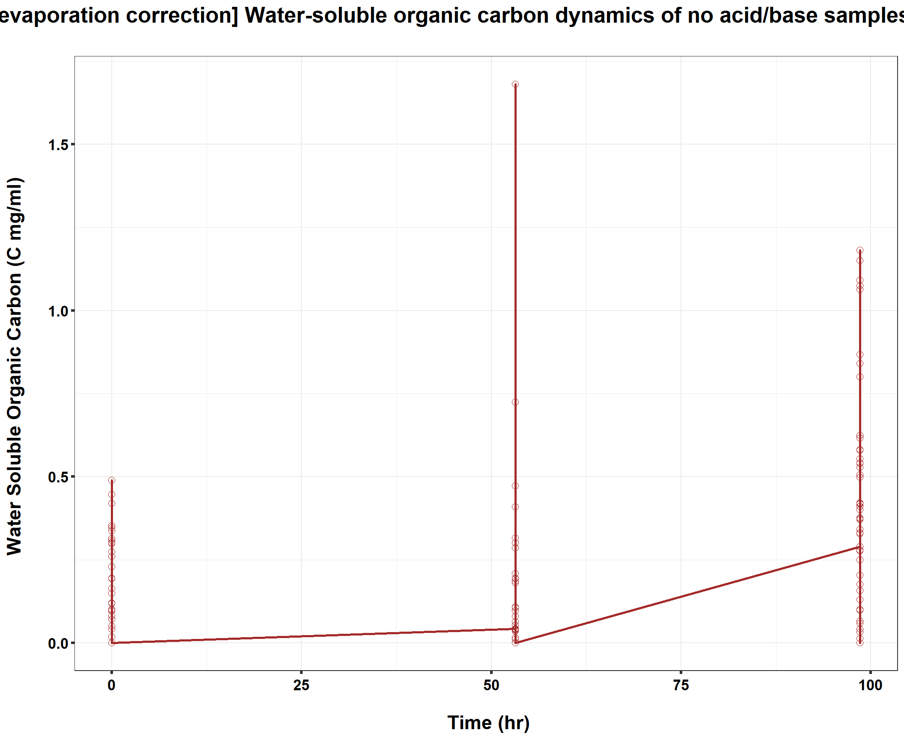
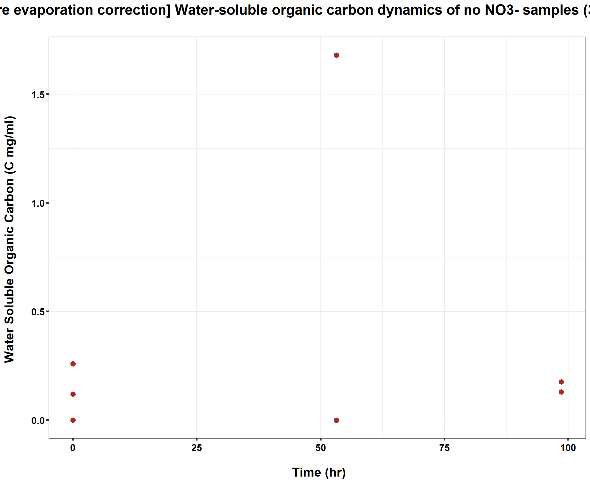
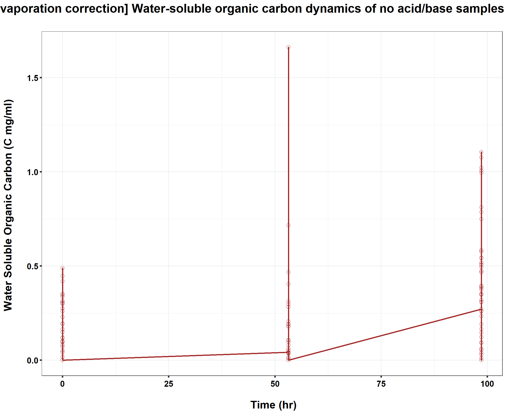
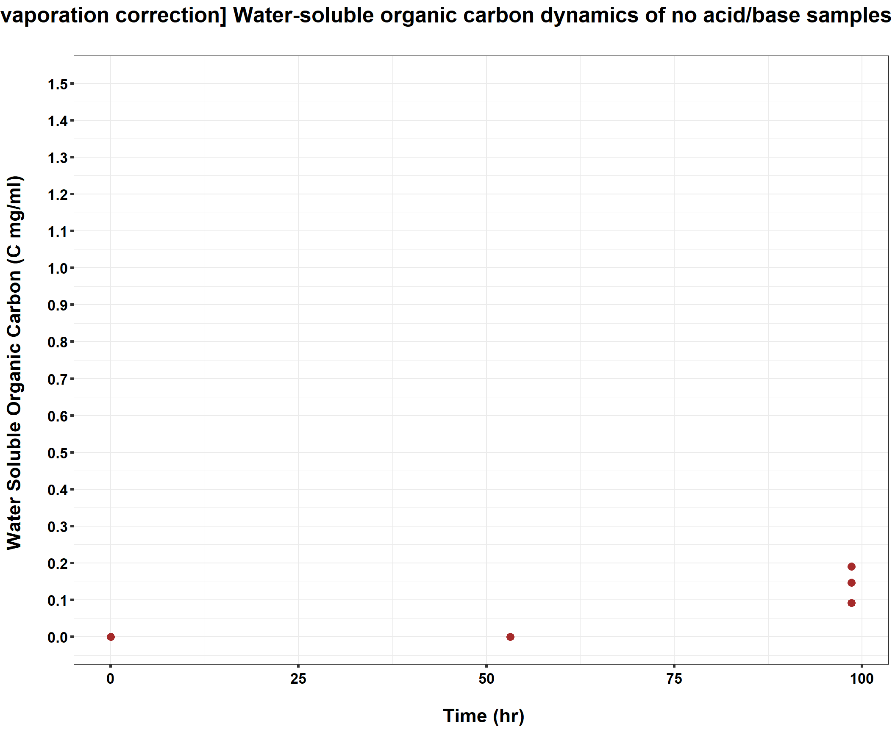
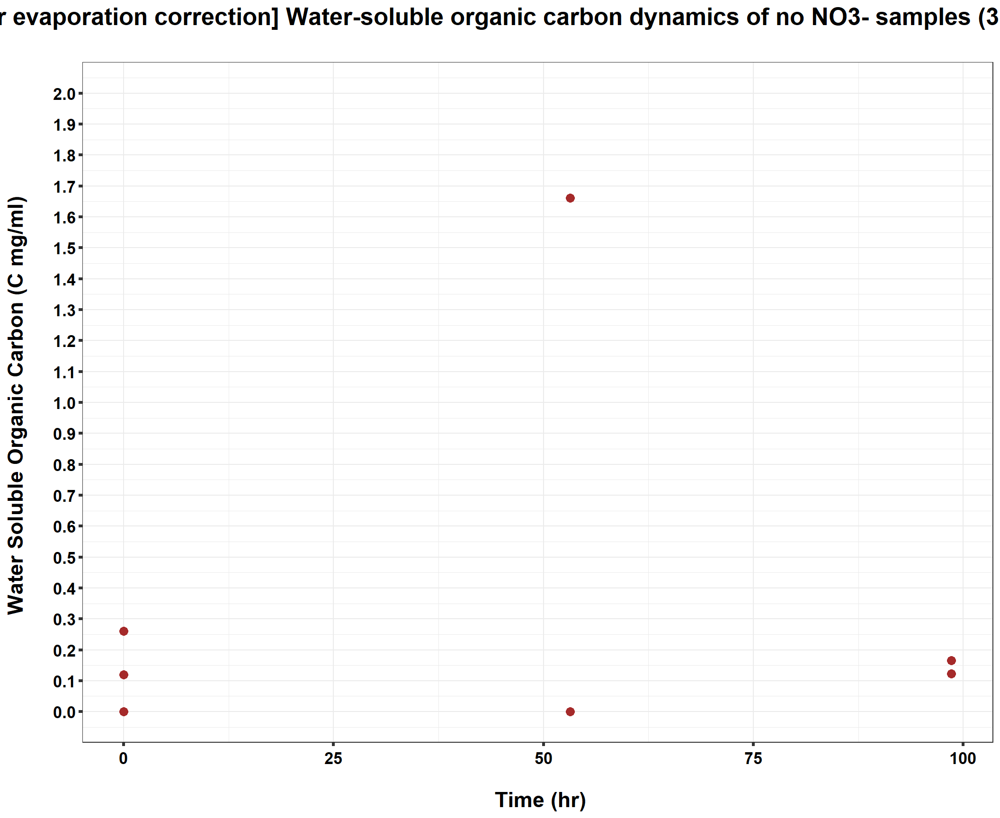
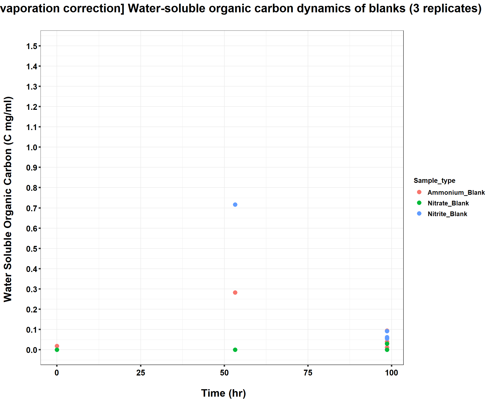
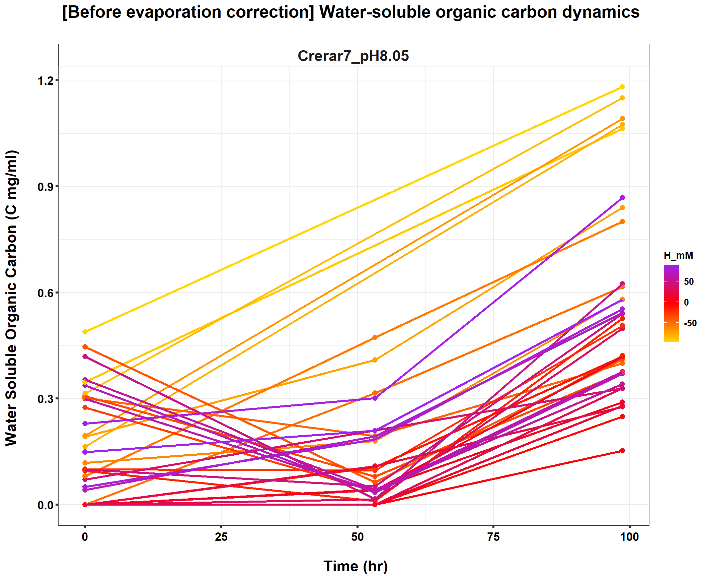
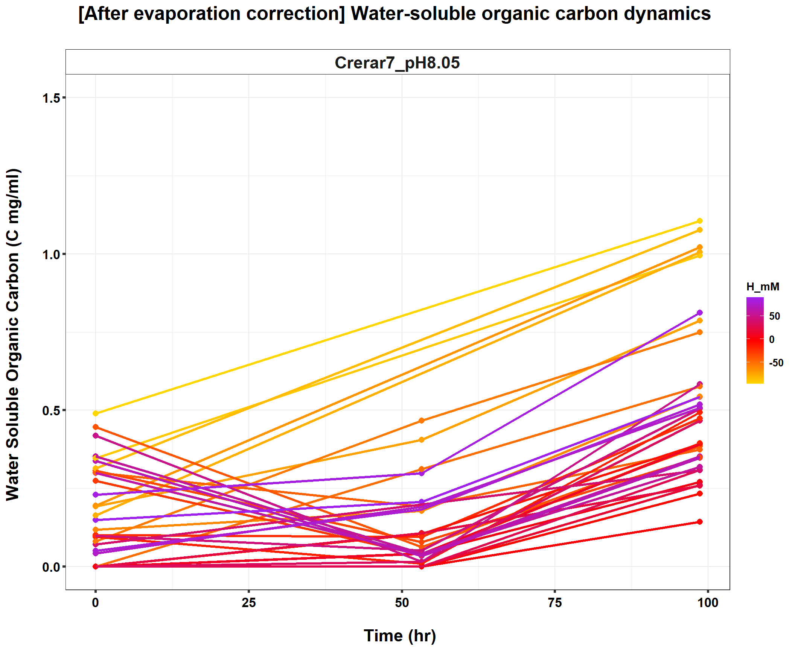
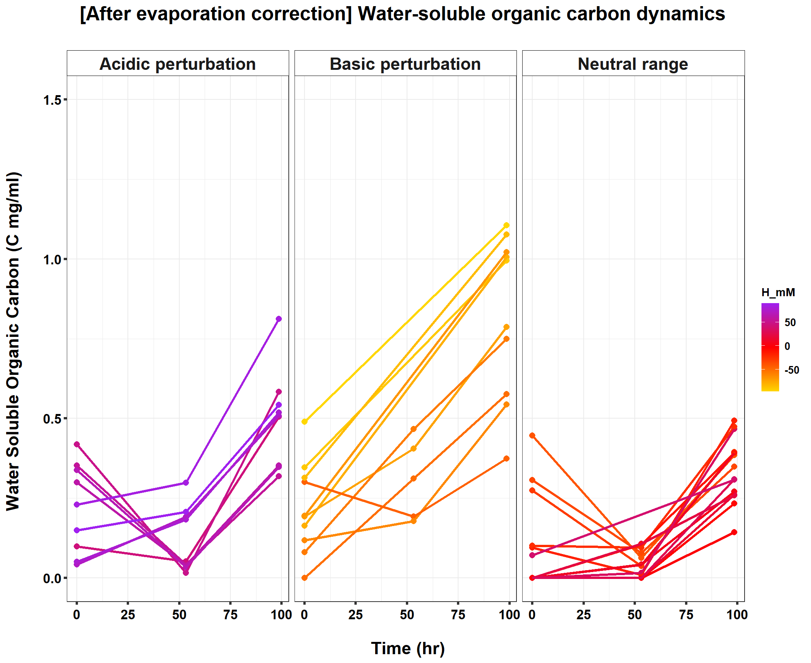
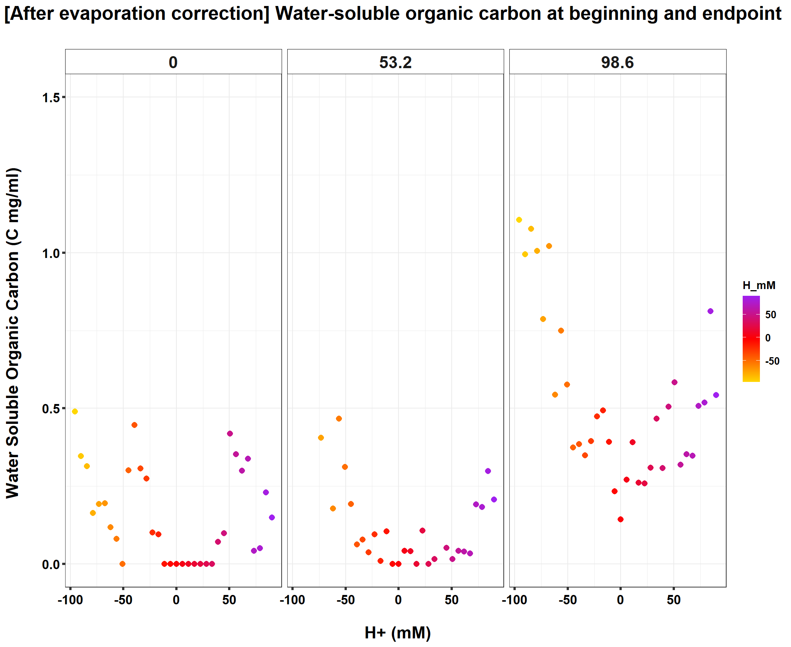

220508_TOC_time_series
KiseokUchicago
2022-05-11
Last updated: 2022-06-08
Checks: 7 0
Knit directory: Denit_visualization_R/
This reproducible R Markdown analysis was created with workflowr (version 1.6.2). The Checks tab describes the reproducibility checks that were applied when the results were created. The Past versions tab lists the development history.
Great! Since the R Markdown file has been committed to the Git repository, you know the exact version of the code that produced these results.
Great job! The global environment was empty. Objects defined in the global environment can affect the analysis in your R Markdown file in unknown ways. For reproduciblity it’s best to always run the code in an empty environment.
The command set.seed(20210924) was run prior to running the code in the R Markdown file. Setting a seed ensures that any results that rely on randomness, e.g. subsampling or permutations, are reproducible.
Great job! Recording the operating system, R version, and package versions is critical for reproducibility.
Nice! There were no cached chunks for this analysis, so you can be confident that you successfully produced the results during this run.
Great job! Using relative paths to the files within your workflowr project makes it easier to run your code on other machines.
Great! You are using Git for version control. Tracking code development and connecting the code version to the results is critical for reproducibility.
The results in this page were generated with repository version 7905c93. See the Past versions tab to see a history of the changes made to the R Markdown and HTML files.
Note that you need to be careful to ensure that all relevant files for the analysis have been committed to Git prior to generating the results (you can use wflow_publish or wflow_git_commit). workflowr only checks the R Markdown file, but you know if there are other scripts or data files that it depends on. Below is the status of the Git repository when the results were generated:
Ignored files:
Ignored: .Rhistory
Ignored: .Rproj.user/
Untracked files:
Untracked: 211020_df_full_innate.xlsx
Untracked: 220421_Griess_antibiotics_experiment_to_kyle_remove_blanks.xlsx
Untracked: 220421_Griess_antibiotics_experiment_to_kyle_remove_blanks_add_pH.xlsx
Untracked: 220421_Griess_antibiotics_experiment_to_kyle_w_autoclaved.xlsx
Untracked: 220422_pH_Antibiotics_Sterile_experiment.xlsx
Untracked: 220519_Griess_antibiotics_experiment_to_kyle_w_autoclaved.xlsx
Untracked: 220521_pH_Antibiotics_dose_effect_experiment.xlsx
Untracked: data/120321_soil_buffering_capacity_Nichols-B.xlsx
Untracked: data/210911_TOC_sample_plate1.xlsx
Untracked: data/210922_Griess_sample_plate1-investigating.xlsx
Untracked: data/210922_Griess_sample_plate1.xlsx
Untracked: data/210927_TOC_sample_plate1_100ul.xlsx
Untracked: data/210927_TOC_sample_plate1_10ul.xlsx
Untracked: data/210928_Griess_sample_plate1.xlsx
Untracked: data/211005_Griess_sample_plate1.xlsx
Untracked: data/211007_Griess_blank_plate1.xlsx
Untracked: data/211007_Griess_blank_plate2.xlsx
Untracked: data/211008_Griess_blank_plate0.xlsx
Untracked: data/211008_Griess_blank_plate1.xlsx
Untracked: data/211017_Griess_plate0.xlsx
Untracked: data/211017_Griess_plate1.xlsx
Untracked: data/211017_Griess_plate2.xlsx
Untracked: data/211017_Griess_plate3.xlsx
Untracked: data/211017_Griess_plate4.xlsx
Untracked: data/211017_Griess_plate5.xlsx
Untracked: data/211017_Griess_plate6.xlsx
Untracked: data/211017_Griess_plate7.xlsx
Untracked: data/211017_Griess_plate8.xlsx
Untracked: data/211019_Griess_plate1.xlsx
Untracked: data/211020_Griess_plate0.xlsx
Untracked: data/211020_Griess_plate1.xlsx
Untracked: data/211020_df_full_innate.xlsx
Untracked: data/211025_Griess_no3_fit_plate0.xlsx
Untracked: data/211025_Griess_no3_fit_plate1.xlsx
Untracked: data/211025_Griess_plate0.xlsx
Untracked: data/211025_Griess_plate1.xlsx
Untracked: data/211028_Griess_plate1.xlsx
Untracked: data/211028_Griess_plate1_no3_fit.xlsx
Untracked: data/211028_Griess_plate2.xlsx
Untracked: data/211028_Griess_plate2_no3_fit.xlsx
Untracked: data/211028_Griess_plate3.xlsx
Untracked: data/211028_Griess_plate3_no3_fit.xlsx
Untracked: data/211028_Griess_plate4.xlsx
Untracked: data/211028_Griess_plate4_no3_fit.xlsx
Untracked: data/211028_time_table.xlsx
Untracked: data/211127_Griess_SUP1.xlsx
Untracked: data/211127_Griess_SUP11.xlsx
Untracked: data/211127_Griess_SUP3.xlsx
Untracked: data/211127_Griess_SUP5.xlsx
Untracked: data/211127_Griess_SUP7.xlsx
Untracked: data/211127_Griess_SUP9.xlsx
Untracked: data/211127_Griess_plate0.xlsx
Untracked: data/211127_time_table.xlsx
Untracked: data/211128_Ammonia_sample_plate10.xlsx
Untracked: data/211128_Ammonia_sample_plate11.xlsx
Untracked: data/211128_Griess_plate1.xlsx
Untracked: data/211128_Griess_plate10.xlsx
Untracked: data/211128_Griess_plate11.xlsx
Untracked: data/211128_Griess_plate2.xlsx
Untracked: data/211128_Griess_plate3.xlsx
Untracked: data/211128_Griess_plate4.xlsx
Untracked: data/211128_Griess_plate5.xlsx
Untracked: data/211128_Griess_plate6.xlsx
Untracked: data/211128_Griess_plate7.xlsx
Untracked: data/211128_Griess_plate8.xlsx
Untracked: data/211128_Griess_plate9.xlsx
Untracked: data/211128_time_table.xlsx
Untracked: data/211201_pH_colorimetric.xlsx
Untracked: data/211203_slurry_vs_water_drying_table.xlsx
Untracked: data/211203_slurry_vs_water_drying_time.xlsx
Untracked: data/211208_pH_colorimetric_T3.xlsx
Untracked: data/211208_pH_colorimetric_T4.xlsx
Untracked: data/211208_pH_colorimetric_T5.xlsx
Untracked: data/211208_pH_colorimetric_plate1.xlsx
Untracked: data/211208_pH_colorimetric_plate2.xlsx
Untracked: data/211208_pH_colorimetric_plate3.xlsx
Untracked: data/211208_time_table.xlsx
Untracked: data/211209_OD600_T1.xlsx
Untracked: data/211209_OD600_T2.xlsx
Untracked: data/211209_OD600_T3.xlsx
Untracked: data/211209_time_table.xlsx
Untracked: data/211210_pH_colorimetric_T0.xlsx
Untracked: data/211210_pH_colorimetric_T1.xlsx
Untracked: data/211210_pH_colorimetric_T2.xlsx
Untracked: data/211210_pH_colorimetric_T3.xlsx
Untracked: data/211210_time_table.xlsx
Untracked: data/211218_pH_colorimetric_t0.xlsx
Untracked: data/211218_pH_colorimetric_t1.xlsx
Untracked: data/211218_pH_colorimetric_t2.xlsx
Untracked: data/211218_pH_colorimetric_t3.xlsx
Untracked: data/211218_pH_colorimetric_t4.xlsx
Untracked: data/211218_time_table.xlsx
Untracked: data/211220_Griess_plate1.xlsx
Untracked: data/211220_Griess_plate10.xlsx
Untracked: data/211220_Griess_plate11.xlsx
Untracked: data/211220_Griess_plate2.xlsx
Untracked: data/211220_Griess_plate3.xlsx
Untracked: data/211220_Griess_plate4.xlsx
Untracked: data/211220_Griess_plate5.xlsx
Untracked: data/211220_Griess_plate6.xlsx
Untracked: data/211220_Griess_plate7.xlsx
Untracked: data/211220_Griess_plate8.xlsx
Untracked: data/211220_Griess_plate9.xlsx
Untracked: data/211220_time_table_AU.xlsx
Untracked: data/211220_time_table_BN.xlsx
Untracked: data/211224_TOC_sample_plate1.xlsx
Untracked: data/220103_Griess_T0.xlsx
Untracked: data/220103_Griess_T1.xlsx
Untracked: data/220103_Griess_T11.xlsx
Untracked: data/220103_Griess_T12.xlsx
Untracked: data/220103_Griess_T2.xlsx
Untracked: data/220103_Griess_T3.xlsx
Untracked: data/220103_Griess_T4.xlsx
Untracked: data/220103_Griess_T5.xlsx
Untracked: data/220103_Griess_T6.xlsx
Untracked: data/220103_Griess_T7.xlsx
Untracked: data/220103_Griess_T8.xlsx
Untracked: data/220103_Griess_T9.xlsx
Untracked: data/220103_time_table.xlsx
Untracked: data/220106_Ammonia_sample_plate1.xlsx
Untracked: data/220107-2_Ammonia_sample_plate1.xlsx
Untracked: data/220107-3_Ammonia_sample_plate1.xlsx
Untracked: data/220107-4_Ammonia_sample_plate1.xlsx
Untracked: data/220107-5_Ammonia_sample_plate1.xlsx
Untracked: data/220107-6_Ammonia_sample_plate1.xlsx
Untracked: data/220107-7_Ammonia_sample_plate1.xlsx
Untracked: data/220107-8_Ammonia_sample_plate1.xlsx
Untracked: data/220107-9_Ammonia_sample_plate1.xlsx
Untracked: data/220107_Ammonia_sample_plate1.xlsx
Untracked: data/220108_Ammonia_sample_plate1.xlsx
Untracked: data/220110_Ammonia_sample_plate1.xlsx
Untracked: data/220110_Ammonia_sample_plate2.xlsx
Untracked: data/220111_Ammonia_sample_T0.xlsx
Untracked: data/220111_Ammonia_sample_T1.xlsx
Untracked: data/220111_Ammonia_sample_T2.xlsx
Untracked: data/220111_Ammonia_sample_T3.xlsx
Untracked: data/220111_TOC_sample_plate1.xlsx
Untracked: data/220112_Ammonia_sample_T11.xlsx
Untracked: data/220112_Ammonia_sample_T12.xlsx
Untracked: data/220112_Ammonia_sample_T4.xlsx
Untracked: data/220112_Ammonia_sample_T5.xlsx
Untracked: data/220112_Ammonia_sample_T6.xlsx
Untracked: data/220112_Ammonia_sample_T7.xlsx
Untracked: data/220112_Ammonia_sample_T8.xlsx
Untracked: data/220112_Ammonia_sample_T9.xlsx
Untracked: data/220113_pH_colorimetric_T0.xlsx
Untracked: data/220113_pH_colorimetric_T12.xlsx
Untracked: data/220113_pH_colorimetric_T2.xlsx
Untracked: data/220113_pH_colorimetric_T3.xlsx
Untracked: data/220113_pH_colorimetric_T8.xlsx
Untracked: data/220125_pH_colorimetric_pH1_mu_opt0.099.xlsx
Untracked: data/220125_pH_colorimetric_pH1_using6.66.xlsx
Untracked: data/220125_pH_colorimetric_pH2_mu_opt0.099.xlsx
Untracked: data/220125_pH_colorimetric_pH2_using6.66.xlsx
Untracked: data/220125_time_table.xlsx
Untracked: data/220128_Ammonia_sample_plate1.xlsx
Untracked: data/220128_Ammonia_sample_plate2.xlsx
Untracked: data/220128_Ammonia_sample_plate3.xlsx
Untracked: data/220128_Ammonia_sample_plate4.xlsx
Untracked: data/220128_Ammonia_sample_plate5.xlsx
Untracked: data/220128_Ammonia_sample_plate6.xlsx
Untracked: data/220128_Griess_plate1.xlsx
Untracked: data/220128_Griess_plate2.xlsx
Untracked: data/220128_Griess_plate3.xlsx
Untracked: data/220128_Griess_plate4.xlsx
Untracked: data/220128_Griess_plate5.xlsx
Untracked: data/220128_Griess_plate6.xlsx
Untracked: data/220128_time_table.xlsx
Untracked: data/220131_Ammonia_sample_plate1.xlsx
Untracked: data/220131_Ammonia_sample_plate2.xlsx
Untracked: data/220131_Ammonia_sample_plate3.xlsx
Untracked: data/220131_Ammonia_sample_plate4.xlsx
Untracked: data/220131_Ammonia_sample_plate5.xlsx
Untracked: data/220131_Ammonia_sample_plate6.xlsx
Untracked: data/220131_Griess_plate1.xlsx
Untracked: data/220131_Griess_plate2.xlsx
Untracked: data/220131_Griess_plate3.xlsx
Untracked: data/220131_Griess_plate4.xlsx
Untracked: data/220131_Griess_plate5.xlsx
Untracked: data/220131_Griess_plate6.xlsx
Untracked: data/220131_pH_colorimetric_pH1_mu_opt_T0.xlsx
Untracked: data/220131_pH_colorimetric_pH2_mu_opt_T0.xlsx
Untracked: data/220131_time_table.xlsx
Untracked: data/220327_Griess_pastplate9.xlsx
Untracked: data/220327_Griess_plate1.xlsx
Untracked: data/220327_Griess_plate10.xlsx
Untracked: data/220327_Griess_plate11.xlsx
Untracked: data/220327_Griess_plate12.xlsx
Untracked: data/220327_Griess_plate13.xlsx
Untracked: data/220327_Griess_plate14.xlsx
Untracked: data/220327_Griess_plate15.xlsx
Untracked: data/220327_Griess_plate16.xlsx
Untracked: data/220327_Griess_plate2.xlsx
Untracked: data/220327_Griess_plate3.xlsx
Untracked: data/220327_Griess_plate4.xlsx
Untracked: data/220327_Griess_plate5.xlsx
Untracked: data/220327_Griess_plate6.xlsx
Untracked: data/220327_Griess_plate7.xlsx
Untracked: data/220327_Griess_plate8.xlsx
Untracked: data/220327_Griess_plate9.xlsx
Untracked: data/220327_time_table.xlsx
Untracked: data/220329_pH_colorimetric_pH1_mu_opt_T0.xlsx
Untracked: data/220329_pH_colorimetric_pH2_mu_opt_T0.xlsx
Untracked: data/220329_pH_colorimetric_pH3_mu_opt_T0.xlsx
Untracked: data/220329_pH_colorimetric_pH4_mu_opt_T0.xlsx
Untracked: data/220329_pH_colorimetric_pH6_mu_opt_T0.xlsx
Untracked: data/220329_pH_colorimetric_pH7_mu_opt_T0.xlsx
Untracked: data/220407_pH_colorimetric_pH3_half_mu_opt_T0.xlsx
Untracked: data/220407_pH_colorimetric_pH_base_treatment_mu_opt_T0.xlsx
Untracked: data/220407_pH_colorimetric_pH_standard_150ul_mu_opt_T0.xlsx
Untracked: data/220407_pH_colorimetric_pH_standard_300ul_mu_opt_T0.xlsx
Untracked: data/220407_pH_colorimetric_pH_standard_60ul_mu_opt_T0.xlsx
Untracked: data/220408_pH_colorimetric_pH_limit_mu_opt_water.xlsx
Untracked: data/220412_pH_colorimetric_pH_half_mu_opt_WW.xlsx
Untracked: data/220414_Ammonia_sample_plate0.xlsx
Untracked: data/220418_Ammonia_sample_plate0.xlsx
Untracked: data/220419_Ammonia_sample_plate0.xlsx
Untracked: data/220420-2_Ammonia_bcf.xlsx
Untracked: data/220420_Ammonia_sample_plate1.xlsx
Untracked: data/220420_Ammonia_sample_plate10.xlsx
Untracked: data/220420_Ammonia_sample_plate11.xlsx
Untracked: data/220420_Ammonia_sample_plate12.xlsx
Untracked: data/220420_Ammonia_sample_plate13.xlsx
Untracked: data/220420_Ammonia_sample_plate14.xlsx
Untracked: data/220420_Ammonia_sample_plate15.xlsx
Untracked: data/220420_Ammonia_sample_plate16.xlsx
Untracked: data/220420_Ammonia_sample_plate2.xlsx
Untracked: data/220420_Ammonia_sample_plate3.xlsx
Untracked: data/220420_Ammonia_sample_plate4.xlsx
Untracked: data/220420_Ammonia_sample_plate5.xlsx
Untracked: data/220420_Ammonia_sample_plate6.xlsx
Untracked: data/220420_Ammonia_sample_plate7.xlsx
Untracked: data/220420_Ammonia_sample_plate8.xlsx
Untracked: data/220420_Ammonia_sample_plate9.xlsx
Untracked: data/220421_Ammonia_df_a_bcf.xlsx
Untracked: data/220421_Ammonia_df_pH_range.xlsx
Untracked: data/220421_Ammonia_sample_plate1.xlsx
Untracked: data/220421_Ammonia_sample_plate10.xlsx
Untracked: data/220421_Ammonia_sample_plate11.xlsx
Untracked: data/220421_Ammonia_sample_plate2.xlsx
Untracked: data/220421_Ammonia_sample_plate3.xlsx
Untracked: data/220421_Ammonia_sample_plate4.xlsx
Untracked: data/220421_Ammonia_sample_plate5.xlsx
Untracked: data/220421_Ammonia_sample_plate6.xlsx
Untracked: data/220421_Ammonia_sample_plate7.xlsx
Untracked: data/220421_Ammonia_sample_plate8.xlsx
Untracked: data/220421_Ammonia_sample_plate9.xlsx
Untracked: data/220421_Ammonia_sterile.xlsx
Untracked: data/220421_Griess_antibiotics_experiment_to_kyle_remove_blanks.xlsx
Untracked: data/220421_Griess_antibiotics_experiment_to_kyle_remove_blanks_add_pH.xlsx
Untracked: data/220421_Griess_plate1.xlsx
Untracked: data/220421_Griess_plate10.xlsx
Untracked: data/220421_Griess_plate11.xlsx
Untracked: data/220421_Griess_plate2.xlsx
Untracked: data/220421_Griess_plate3.xlsx
Untracked: data/220421_Griess_plate4.xlsx
Untracked: data/220421_Griess_plate5.xlsx
Untracked: data/220421_Griess_plate6.xlsx
Untracked: data/220421_Griess_plate7.xlsx
Untracked: data/220421_Griess_plate8.xlsx
Untracked: data/220421_Griess_plate9.xlsx
Untracked: data/220421_nitrate_reduced_autoclaved_samples.xlsx
Untracked: data/220421_time_table.xlsx
Untracked: data/220422_pH_Antibiotics_Sterile_experiment.xlsx
Untracked: data/220422_pH_colorimetric_LBA_Sterile_T0_mu_opt_T0.xlsx
Untracked: data/220422_pH_colorimetric_LBA_Sterile_T4_mu_opt_T0.xlsx
Untracked: data/220422_pH_colorimetric_LBA_Sterile_T4_mu_opt_T4.xlsx
Untracked: data/220422_pH_colorimetric_LBA_Sterile_T7_mu_opt_T0.xlsx
Untracked: data/220422_pH_colorimetric_LBA_Sterile_T7_mu_opt_T7.xlsx
Untracked: data/220422_pH_colorimetric_LBA_Sterile_T9_mu_opt_T0.xlsx
Untracked: data/220422_pH_colorimetric_LBA_Sterile_T9_mu_opt_T9.xlsx
Untracked: data/220508_TOC_sample_plate1.xlsx
Untracked: data/220513_TOC_sample_plate1.xlsx
Untracked: data/220513_TOC_sample_plate2.xlsx
Untracked: data/220513_TOC_sample_plate3.xlsx
Untracked: data/220517_time_table.xlsx
Untracked: data/220519_Griess_antibiotics_dose_experiment_remove_blanks.xlsx
Untracked: data/220519_Griess_crerar7_extreme.xlsx
Untracked: data/220519_Griess_plate1.xlsx
Untracked: data/220519_Griess_plate10.xlsx
Untracked: data/220519_Griess_plate11.xlsx
Untracked: data/220519_Griess_plate2.xlsx
Untracked: data/220519_Griess_plate3.xlsx
Untracked: data/220519_Griess_plate4.xlsx
Untracked: data/220519_Griess_plate5.xlsx
Untracked: data/220519_Griess_plate6.xlsx
Untracked: data/220519_Griess_plate7.xlsx
Untracked: data/220519_Griess_plate8.xlsx
Untracked: data/220519_Griess_plate9.xlsx
Untracked: data/220519_time_table.xlsx
Untracked: data/220520_TOC_sample_plate1.xlsx
Untracked: data/220520_TOC_sample_plate2.xlsx
Untracked: data/220520_TOC_sample_plate3.xlsx
Untracked: data/220521_pH_Antibiotics_dose_effect_experiment.xlsx
Untracked: data/220521_pH_colorimetric_Barneveld2_Sterile_T0_mu_opt_T0.xlsx
Untracked: data/220521_pH_colorimetric_Barneveld2_Sterile_T10_mu_opt_T0.xlsx
Untracked: data/220521_pH_colorimetric_Barneveld2_Sterile_T7_mu_opt_T0.xlsx
Untracked: data/220526_TOC_sample_plate1.xlsx
Untracked: data/220527_TOC_sample_plate1.xlsx
Untracked: data/220601_TOC_sample_plate1.xlsx
Untracked: data/220602-2_TOC_sample_plate1.xlsx
Untracked: data/220602-2_control_OD600.xlsx
Untracked: data/220602-3_TOC_sample_plate1.xlsx
Untracked: data/220602-3_control_OD600.xlsx
Untracked: data/220602_TOC_sample_plate1.xlsx
Untracked: data/220603_100ul_OD600.xlsx
Untracked: data/220603_TOC_sample_plate1.xlsx
Untracked: data/220603_TOC_sample_plate2.xlsx
Untracked: data/220606_TOC_sample_plate1.xlsx
Untracked: data/220606_TOC_sample_plate2.xlsx
Untracked: data/ForKiseok_from_Dr_Cuhel.xlsx
Untracked: data/ForKiseok_from_Dr_Cuhel_format_edited.xlsx
Untracked: data/OD434_OD585_C_WB_T5_220329.xlsx
Untracked: data/OD434_OD585_WW_C_T0_220329.xlsx
Untracked: data/OD434_OD585_pH3_half_area_220407.xlsx
Untracked: data/OD434_OD585_pH_base_treated_T0_220407.xlsx
Untracked: data/OD434_OD585_pH_half_150ul_220412.xlsx
Untracked: data/SPNa_86437_021122_edit.xlsx
Untracked: data/SPNa_86437_021122_edit2.xlsx
Untracked: data/TOC_TN_measurement_2_labs_211014.xlsx
Untracked: data/dry_weight_curve(9.5.21).xlsx
Untracked: data/pH_data(11.17.21)-Midway_etc.xlsx
Untracked: data/pH_data(12.6.21)-Midway_incubation_endpoint.xlsx
Untracked: data/pH_data(9.14.21).xlsx
Untracked: data/pH_data(9.28.21).xlsx
Untracked: data/pH_standard_150ul_220407.xlsx
Untracked: data/pH_standard_300ul_220407.xlsx
Untracked: data/pH_standard_60ul_220407.xlsx
Untracked: data/~$220513_TOC_sample_plate1.xlsx
Untracked: data/~$SPNa_86437_021122_edit.xlsx
Untracked: past_figures/
Note that any generated files, e.g. HTML, png, CSS, etc., are not included in this status report because it is ok for generated content to have uncommitted changes.
These are the previous versions of the repository in which changes were made to the R Markdown (analysis/220508_TOC_time_series.Rmd) and HTML (docs/220508_TOC_time_series.html) files. If you’ve configured a remote Git repository (see ?wflow_git_remote), click on the hyperlinks in the table below to view the files as they were in that past version.
| File | Version | Author | Date | Message |
|---|---|---|---|---|
| Rmd | 7905c93 | KiseokUchicago | 2022-06-08 | wflow_publish("analysis/*.Rmd") |
TOC(Total organic carbon) measurements
Researcher: Kiseok Lee
Experiment Date: 5/8/22
Analysis Date: 5/11/22
Lab: Seppe Kuehn
# libraries
library(dplyr)
library(ggplot2)
library(RColorBrewer)
library(vegan)
library(tidyverse)
library(magrittr)
library(readxl)
library(reshape2)
library(gtools)
library(devtools)
library(openxlsx)
library(ape)
library(stringr)
library(tidyr)
library(ggrepel)
library(ggpubr)
## theme for ggplot
mytheme <- theme_bw() +
theme(text = element_text(face="bold", colour = 'black')) +
theme(plot.title = element_text(size = 19,hjust = 0.5,face="bold", colour = 'black')) +
theme(axis.title.x = element_text(size = 17,hjust = 0.5,face="bold", colour = 'black')) +
theme(axis.title.y = element_text(size = 17,hjust = 0.5,face="bold", colour = 'black')) +
theme(axis.text.x = element_text(hjust = 0.5, vjust=0.3,size=13,face="bold", colour = 'black'))+
theme(axis.text.y = element_text(size=13,face="bold", colour = 'black'))+
theme(panel.grid.major = element_blank()) +
theme(panel.grid.minor = element_blank(),panel.background=element_blank(),panel.border=element_blank(),plot.background=element_blank()) +
theme(axis.ticks = element_line(size = 1.1))+
theme(legend.text=element_text(size=10,face="bold", colour = 'black'))
mytheme_2d <- theme_bw() +
theme(text = element_text(face="bold", colour = 'black')) +
theme(plot.title = element_text(size = 19,hjust = 0.5,face="bold", colour = 'black')) +
theme(axis.title.x = element_text(size = 17,hjust = 0.5,face="bold", colour = 'black')) +
theme(axis.title.y = element_text(size = 17,hjust = 0.5,face="bold", colour = 'black')) +
theme(axis.text.x = element_text(hjust = 0.5, vjust=0.3,size=13,face="bold", colour = 'black'))+
theme(axis.text.y = element_text(size=13,face="bold", colour = 'black'))+
# theme(panel.grid.major = element_blank()) +
# theme(panel.grid.minor = element_blank(),panel.background=element_blank(),plot.background=element_blank()) +
theme(axis.ticks = element_line(size = 1.1))+
theme(legend.text=element_text(size=10,face="bold", colour = 'black'))
# color collection
my_color_collection <- c(
"#CBD588", "#5F7FC7", "orange", "#AD6F3B", "#673770",
"#D14285", "#652926", "#C84248", "#8569D5", "#5E738F",
"#D1A33D", "#8A7C64", "#599861","#616163", "#FFCDB2",
"#6D9F71", "#242F40",
"#CCA43B", "#F92A82", "#ED7B84", "#7EB77F",
"#DEC4A1", "#E5D1D0", '#0E8482', '#C9DAEA', '#337357',
'#95C623', '#E55812', '#04471C', '#F2D7EE', '#D3BCC0',
'#A5668B', '#69306D', '#0E103D', '#1A535C', '#4ECDC4',
'#F7FFF7', '#FF6B6B', '#FFE66D', '#6699CC', '#FFF275',
'#FF8C42', '#FF3C38', '#A23E48', '#000000', '#CF5C36',
'#EEE5E9', '#7C7C7C', '#EFC88B', '#2E5266', '#6E8898',
'#9FB1BC', '#D3D0CB', '#E2C044', '#5BC0EB', '#FDE74C',
'#9BC53D', '#E55934', '#FA7921', "#CD9BCD", "#508578", "#DA5724")
# for git push, use this instead of using wflow_git_push()
# git push -u origin master (in the Git app / in the working directory)
# for making pdf file
library(rmarkdown)
# render("analysis/~~.Rmd", "pdf_document")1. Import data table from python code
# import file
# 10ul
df_20ul <- openxlsx::read.xlsx("data/220508_TOC_sample_plate1.xlsx")
df_C_T8 <- openxlsx::read.xlsx("data/220513_TOC_sample_plate1.xlsx")
df_C_T8 <- df_C_T8 %>% filter(Time_point == "C_T8") %>% select(-Antibiotics_type, -Treatment)
head(df_20ul) Well Nitrite_input Nitrate_input Ammonium_input Soil Sample_type
1 A01 0 2 0 Crerar7_pH8.05 Slurry
2 A02 0 2 0 Crerar7_pH8.05 Slurry
3 A03 0 2 0 Crerar7_pH8.05 Slurry
4 A04 0 2 0 Crerar7_pH8.05 Slurry
5 A05 0 2 0 Crerar7_pH8.05 Slurry
6 A06 0 2 0 Crerar7_pH8.05 Slurry
Titration_type Unit Concentration_M Added_ul Time_point TOC_OD600 TOC_mgml
1 HCl 1 0.5 20 C_T0 0.0000 0.00000000
2 HCl 3 1.5 20 C_T0 0.0000 0.00000000
3 HCl 5 2.5 20 C_T0 0.0000 0.00000000
4 HCl 7 3.5 20 C_T0 0.0070 0.02727148
5 HCl 9 4.5 20 C_T0 0.0305 0.16037321
6 HCl 11 5.5 20 C_T0 0.0224 0.11449395colnames(df_20ul) [1] "Well" "Nitrite_input" "Nitrate_input" "Ammonium_input"
[5] "Soil" "Sample_type" "Titration_type" "Unit"
[9] "Concentration_M" "Added_ul" "Time_point" "TOC_OD600"
[13] "TOC_mgml" dim(df_20ul)[1] 96 13colnames(df_C_T8) [1] "Well" "Nitrite_input" "Nitrate_input" "Ammonium_input"
[5] "Soil" "Sample_type" "Titration_type" "Unit"
[9] "Concentration_M" "Added_ul" "Time_point" "TOC_OD600"
[13] "TOC_mgml" dim(df_C_T8)[1] 48 13# remove wells H06, H09
df_C_T8 %<>% filter(!(Well %in% c("A10","F08","F09","F10", "E10","E11")))
# remove NA
dim(df_20ul)[1] 96 13df_20ul <- na.omit(df_20ul)
dim(df_20ul)[1] 96 13dim(df_C_T8)[1] 42 13df_C_T8 <- na.omit(df_C_T8)
dim(df_C_T8)[1] 42 13# merge two
df_20ul <- rbind(df_20ul, df_C_T8)
dim(df_20ul)[1] 138 13# dim(df_p)
# Get the metadata for time point and left join
Time_table <- openxlsx::read.xlsx("data/220327_time_table.xlsx")
# Time_table_BN <- openxlsx::read.xlsx("data/220327_time_table_BN.xlsx")
# Time_table <- rbind(Time_table_AU, Time_table_BN)
Time_table %<>% select(-Date)
Time_table$Time_hours <- round(Time_table$Time_hours, 1)
Time_table$Time_days <- round(Time_table$Time_days, 1)
df_time <- Time_table
dim(df_20ul)[1] 138 13df_20ul <- df_20ul %>% left_join(Time_table, by=("Time_point"="Time_point"))
dim(df_20ul)[1] 138 16colnames(df_20ul) [1] "Well" "Nitrite_input" "Nitrate_input" "Ammonium_input"
[5] "Soil" "Sample_type" "Titration_type" "Unit"
[9] "Concentration_M" "Added_ul" "Time_point" "TOC_OD600"
[13] "TOC_mgml" "Time_minutes" "Time_hours" "Time_days" # get F11
df_20ul %>% filter(Well == "F11") Well Nitrite_input Nitrate_input Ammonium_input Soil Sample_type
1 F11 0 0 0 Crerar7_pH8.05 No_Nitrate
2 F11 0 0 0 Crerar7_pH8.05 No_Nitrate
Titration_type Unit Concentration_M Added_ul Time_point TOC_OD600 TOC_mgml
1 No_Nitrate 0 0 20 C_T10 0.01415 0.06776685
2 No_Nitrate 0 0 20 C_T8 0.11620 0.64319925
Time_minutes Time_hours Time_days
1 5915 98.6 4.1
2 3190 53.2 2.22. Preprocess data and select datapoints to visualize
# 1. multiply dilution factor
df_20ul %<>% mutate(TOC_mgml = TOC_mgml * (5/2))
df_20ul %>% filter(Well == "F11") Well Nitrite_input Nitrate_input Ammonium_input Soil Sample_type
1 F11 0 0 0 Crerar7_pH8.05 No_Nitrate
2 F11 0 0 0 Crerar7_pH8.05 No_Nitrate
Titration_type Unit Concentration_M Added_ul Time_point TOC_OD600 TOC_mgml
1 No_Nitrate 0 0 20 C_T10 0.01415 0.1694171
2 No_Nitrate 0 0 20 C_T8 0.11620 1.6079981
Time_minutes Time_hours Time_days
1 5915 98.6 4.1
2 3190 53.2 2.2# 2. Apply moisture correction factor (correcting for moisture in soil)
Added_Volume <- 1.7 # ml
Soil_mg <- 0.85
moisture_percent_1 = 63.1 # Webster
Added_Volume + Soil_mg*(moisture_percent_1/100)[1] 2.23635moisture_percent_2 = 6.8 # WarrenWoods1
Added_Volume + Soil_mg*(moisture_percent_2/100)[1] 1.7578moisture_percent_3 = 9.0 # Crerar7
Added_Volume + Soil_mg*(moisture_percent_3/100)[1] 1.7765## acid/base
df_20ul$Added_ul <- ifelse(df_20ul$Titration_type == "NaOH", -1*df_20ul$Added_ul, df_20ul$Added_ul) # HCl is +, NaOH is -
df_20ul %<>% mutate(H_mol = Concentration_M * Added_ul * 10^(-6)) # Calculate H mol
df_20ul$Volume <- ifelse(df_20ul$Soil == "Webster_pH3.3", Added_Volume + Soil_mg*(moisture_percent_1/100),
ifelse(df_20ul$Soil == "WarrenWoods1_pH5.23", Added_Volume + Soil_mg*(moisture_percent_2/100),
ifelse(df_20ul$Soil == "Crerar7_pH8.05", Added_Volume + Soil_mg*(moisture_percent_3/100),
0))) # Calc total volume
# df_20ul$Volume <- ifelse(df_20ul$Soil == "Allandale_pH4", Added_Volume + Soil_mg*(moisture_percent_2/100), df_20ul$Volume) # Calc total volume
# df_20ul$Volume %>% unique()
df_20ul %<>% mutate(H_Molarity = H_mol / (Volume * 10^(-3)))
df_20ul %<>% mutate(H_mM = H_Molarity * 1000)
# openxlsx::write.xlsx(df_20ul, "df_20ul.xlsx")
# how many levels of H_mM?
df_20ul %>% filter(Soil == "Webster_pH3.3")%>% select(H_mM) %>% unique() %>% arrange(H_mM)[1] H_mM
<0 rows> (or 0-length row.names)df_20ul %>% filter(Soil == "WarrenWoods1_pH5.23")%>% select(H_mM) %>% unique() %>% arrange()[1] H_mM
<0 rows> (or 0-length row.names)df_20ul %>% filter(Soil == "Crerar7_pH8.05")%>% select(H_mM) %>% unique() %>% arrange() H_mM
1 5.629046
2 16.887138
3 28.145229
4 39.403321
5 50.661413
6 61.919505
7 11.258092
8 22.516184
9 33.774275
10 45.032367
11 56.290459
12 67.548551
13 73.177596
14 84.435688
15 -5.629046
16 -16.887138
17 -28.145229
18 -39.403321
19 78.806642
20 90.064734
21 -11.258092
22 -22.516184
23 -33.774275
24 -45.032367
25 -50.661413
26 -61.919505
27 -73.177596
28 -84.435688
29 -95.693780
30 0.000000
31 -56.290459
32 -67.548551
33 -78.806642
34 -90.064734colnames(df_20ul) [1] "Well" "Nitrite_input" "Nitrate_input" "Ammonium_input"
[5] "Soil" "Sample_type" "Titration_type" "Unit"
[9] "Concentration_M" "Added_ul" "Time_point" "TOC_OD600"
[13] "TOC_mgml" "Time_minutes" "Time_hours" "Time_days"
[17] "H_mol" "Volume" "H_Molarity" "H_mM" ## Moisture correction
dim(df_20ul)[1] 138 20# Testing negative samples
df_no3_blank <- df_20ul %>% filter(Sample_type == "Nitrate_Blank") # Use Nitrate_Blank instead in the future
df_no3_blank # 33 Well Nitrite_input Nitrate_input Ammonium_input Soil Sample_type
1 G06 0 2 0 Crerar7_pH8.05 Nitrate_Blank
2 G12 0 2 0 Crerar7_pH8.05 Nitrate_Blank
3 H05 0 2 0 Crerar7_pH8.05 Nitrate_Blank
4 H06 0 2 0 Crerar7_pH8.05 Nitrate_Blank
5 H11 0 2 0 Crerar7_pH8.05 Nitrate_Blank
6 H12 0 2 0 Crerar7_pH8.05 Nitrate_Blank
7 G12 0 2 0 Crerar7_pH8.05 Nitrate_Blank
8 H11 0 2 0 Crerar7_pH8.05 Nitrate_Blank
9 H12 0 2 0 Crerar7_pH8.05 Nitrate_Blank
Titration_type Unit Concentration_M Added_ul Time_point TOC_OD600 TOC_mgml
1 Nitrate 0 0 20 C_T0 0.00000 0.00000000
2 Nitrate 0 0 20 C_T10 0.00000 0.00000000
3 Nitrate 0 0 20 C_T0 0.00000 0.00000000
4 Nitrate 0 0 20 C_T0 0.00000 0.00000000
5 Nitrate 0 0 20 C_T10 0.00445 0.03207349
6 Nitrate 0 0 20 C_T10 0.00165 0.00000000
7 Nitrate 0 0 20 C_T8 0.00000 0.00000000
8 Nitrate 0 0 20 C_T8 0.00000 0.00000000
9 Nitrate 0 0 20 C_T8 0.00000 0.00000000
Time_minutes Time_hours Time_days H_mol Volume H_Molarity H_mM
1 0 0.0 0.0 0 1.7765 0 0
2 5915 98.6 4.1 0 1.7765 0 0
3 0 0.0 0.0 0 1.7765 0 0
4 0 0.0 0.0 0 1.7765 0 0
5 5915 98.6 4.1 0 1.7765 0 0
6 5915 98.6 4.1 0 1.7765 0 0
7 3190 53.2 2.2 0 1.7765 0 0
8 3190 53.2 2.2 0 1.7765 0 0
9 3190 53.2 2.2 0 1.7765 0 0df_no2_blank <- df_20ul %>% filter(Sample_type == "Nitrite_Blank")
df_no2_blank # 33 Well Nitrite_input Nitrate_input Ammonium_input Soil Sample_type
1 G04 2 0 0 Crerar7_pH8.05 Nitrite_Blank
2 G05 2 0 0 Crerar7_pH8.05 Nitrite_Blank
3 G10 2 0 0 Crerar7_pH8.05 Nitrite_Blank
4 G11 2 0 0 Crerar7_pH8.05 Nitrite_Blank
5 H04 2 0 0 Crerar7_pH8.05 Nitrite_Blank
6 H10 2 0 0 Crerar7_pH8.05 Nitrite_Blank
7 G10 2 0 0 Crerar7_pH8.05 Nitrite_Blank
8 G11 2 0 0 Crerar7_pH8.05 Nitrite_Blank
9 H10 2 0 0 Crerar7_pH8.05 Nitrite_Blank
Titration_type Unit Concentration_M Added_ul Time_point TOC_OD600 TOC_mgml
1 Nitrite 0 0 20 C_T0 0.00000 0.00000000
2 Nitrite 0 0 20 C_T0 0.00105 0.00000000
3 Nitrite 0 0 20 C_T10 0.00910 0.09791271
4 Nitrite 0 0 20 C_T10 0.00685 0.06605485
5 Nitrite 0 0 20 C_T0 0.00000 0.00000000
6 Nitrite 0 0 20 C_T10 0.00635 0.05897537
7 Nitrite 0 0 20 C_T8 0.05335 0.72425924
8 Nitrite 0 0 20 C_T8 0.00000 0.00000000
9 Nitrite 0 0 20 C_T8 0.00000 0.00000000
Time_minutes Time_hours Time_days H_mol Volume H_Molarity H_mM
1 0 0.0 0.0 0 1.7765 0 0
2 0 0.0 0.0 0 1.7765 0 0
3 5915 98.6 4.1 0 1.7765 0 0
4 5915 98.6 4.1 0 1.7765 0 0
5 0 0.0 0.0 0 1.7765 0 0
6 5915 98.6 4.1 0 1.7765 0 0
7 3190 53.2 2.2 0 1.7765 0 0
8 3190 53.2 2.2 0 1.7765 0 0
9 3190 53.2 2.2 0 1.7765 0 0soil_spike_ratio = 0.5 # soil weight(0.85g) / spike in volume (1.7ml)
mcf_1 = (soil_spike_ratio*(moisture_percent_1/100) + 1)
mcf_1[1] 1.3155mcf_2 = (soil_spike_ratio*(moisture_percent_2/100) + 1)
mcf_2[1] 1.034mcf_3 = (soil_spike_ratio*(moisture_percent_3/100) + 1)
mcf_3[1] 1.045# this is a special case with no replicates
df_20ul_mcf_1 <- df_20ul %>% filter(Soil == "Webster_pH3.3") %>% filter(Titration_type %in% c("NaOH","HCl","No_Nitrate")) %>% mutate(TOC_mgml = TOC_mgml * mcf_1)
dim(df_20ul_mcf_1) #306[1] 0 20df_20ul_mcf_2 <- df_20ul %>% filter(Soil == "WarrenWoods1_pH5.23") %>% filter(Titration_type %in% c("NaOH","HCl","No_Nitrate")) %>% mutate(TOC_mgml = TOC_mgml * mcf_2)
dim(df_20ul_mcf_2) #429[1] 0 20df_20ul_mcf_3 <- df_20ul %>% filter(Soil == "Crerar7_pH8.05") %>% filter(Titration_type %in% c("NaOH","HCl","No_Nitrate")) %>% mutate(TOC_mgml = TOC_mgml * mcf_3)
dim(df_20ul_mcf_3) #426[1] 111 20df_20ul_others_mcf <- df_20ul %>% filter(Sample_type %in% c("Nitrite_Blank", "Nitrate_Blank", "Ammonium_Blank")) # Use Nitrate_Blank instead in the future
dim(df_20ul_others_mcf) #287[1] 27 20df_20ul_mcf <- rbind(df_20ul_mcf_1, df_20ul_mcf_2, df_20ul_mcf_3, df_20ul_others_mcf)
dim(df_20ul_mcf) # 96[1] 138 20df_20ul_mcf %>% filter(Well == "F11") Well Nitrite_input Nitrate_input Ammonium_input Soil Sample_type
1 F11 0 0 0 Crerar7_pH8.05 No_Nitrate
2 F11 0 0 0 Crerar7_pH8.05 No_Nitrate
Titration_type Unit Concentration_M Added_ul Time_point TOC_OD600 TOC_mgml
1 No_Nitrate 0 0 20 C_T10 0.01415 0.1770409
2 No_Nitrate 0 0 20 C_T8 0.11620 1.6803581
Time_minutes Time_hours Time_days H_mol Volume H_Molarity H_mM
1 5915 98.6 4.1 0 1.7765 0 0
2 3190 53.2 2.2 0 1.7765 0 0# 3. Calculate soil TOC percent
# soil_weight_g = 0.85
# spike_in_volume_ml = 1.7
# df_20ul_mcf %<>% mutate(TOC_percent = TOC_mgml * 0.001 * (spike_in_volume_ml / soil_weight_g) *100)
# df_percent <- df_20ul_mcf
# colnames(df_percent)
# average technical replicate
#
# df_ave <- df_percent %>% group_by(Sample, TOC, Sample_type) %>% summarise(Ave_TOC_percent = mean(TOC_percent), Std_TOC_percent = sd(TOC_percent), Ave_TOC_mgml = mean(TOC_mgml), Std_TOC_mgml = sd(TOC_mgml)) %>% ungroup()
#
# colnames(df_ave)3. Get the concentrations
# (1) Water soluble organic C mg/ml
ggplot(df_20ul_mcf, aes(x=Time_hours, y=TOC_mgml)) +
geom_point(size=2.5, shape=21, color = "brown") +
geom_line(size=1, color='brown')+
# geom_errorbar(aes(ymin=Ave_TOC_mgml - Std_TOC_mgml, ymax=Ave_TOC_mgml + Std_TOC_mgml), width=.05)+
scale_fill_brewer(palette='Set2') +
ylab("Water Soluble Organic Carbon (C mg/ml) \n") +
xlab("\n Time (hr)") +
# scale_x_continuous(breaks = seq(0,16,1), limits=c(0, 16))+
#scale_y_continuous(breaks = seq(0,0.3,0.05), limits=c(0, 0.3))+
ggtitle("[Before evaporation correction] Water-soluble organic carbon dynamics of no acid/base samples (3 replicates) \n") +
# label
# geom_text(aes(label = round(Ave_TOC_mgml,3)), size = 3, vjust = -1.5, family="serif", show.legend = FALSE)+
mytheme_2d
# plot blanks
# (2) plot separately only the H_mM == 0 samples
df_20ul_mcf_null <- df_20ul_mcf %>% filter(H_mM == 0, Sample_type == "Slurry")
ggplot(df_20ul_mcf_null, aes(x=Time_hours, y=TOC_mgml)) +
geom_point(size=3, shape=16, color = "brown") +
# geom_line(size=1, color='brown')+
# geom_errorbar(aes(ymin=Ave_TOC_mgml - Std_TOC_mgml, ymax=Ave_TOC_mgml + Std_TOC_mgml), width=.05)+
scale_fill_brewer(palette='Set2') +
ylab("Water Soluble Organic Carbon (C mg/ml) \n") +
xlab("\n Time (hr)") +
scale_y_continuous(breaks = seq(0,1.5,0.1), limits=c(0, 1.5))+
ggtitle("[Before evaporation correction] Water-soluble organic carbon dynamics of no acid/base samples (3 replicates) \n") +
# label
# geom_text(aes(label = round(Ave_TOC_mgml,3)), size = 3, vjust = -1.5, family="serif", show.legend = FALSE)+
mytheme_2d# (3) plot no nitrate samples
df_20ul_mcf_nn <- df_20ul_mcf %>% filter(H_mM == 0, Titration_type == "No_Nitrate")
# df_20ul_mcf$Titration_type
ggplot(df_20ul_mcf_nn, aes(x=Time_hours, y=TOC_mgml)) +
geom_point(size=3, shape=16, color = "brown") +
# geom_line(size=1, color='brown')+
# geom_errorbar(aes(ymin=Ave_TOC_mgml - Std_TOC_mgml, ymax=Ave_TOC_mgml + Std_TOC_mgml), width=.05)+
scale_fill_brewer(palette='Set2') +
ylab("Water Soluble Organic Carbon (C mg/ml) \n") +
xlab("\n Time (hr)") +
# scale_y_continuous(breaks = seq(0,1.5,0.1), limits=c(0, 1.5))+
ggtitle("[Before evaporation correction] Water-soluble organic carbon dynamics of no NO3- samples (3 replicates) \n") +
# label
# geom_text(aes(label = round(Ave_TOC_mgml,3)), size = 3, vjust = -1.5, family="serif", show.legend = FALSE)+
mytheme_2d
# what is happening with no nitrate sample?
df_20ul_mcf_nn Well Nitrite_input Nitrate_input Ammonium_input Soil Sample_type
1 E06 0 0 0 Crerar7_pH8.05 No_Nitrate
2 E12 0 0 0 Crerar7_pH8.05 No_Nitrate
3 F05 0 0 0 Crerar7_pH8.05 No_Nitrate
4 F06 0 0 0 Crerar7_pH8.05 No_Nitrate
5 F11 0 0 0 Crerar7_pH8.05 No_Nitrate
6 F12 0 0 0 Crerar7_pH8.05 No_Nitrate
7 E12 0 0 0 Crerar7_pH8.05 No_Nitrate
8 F11 0 0 0 Crerar7_pH8.05 No_Nitrate
9 F12 0 0 0 Crerar7_pH8.05 No_Nitrate
Titration_type Unit Concentration_M Added_ul Time_point TOC_OD600 TOC_mgml
1 No_Nitrate 0 0 20 C_T0 0.00000 0.0000000
2 No_Nitrate 0 0 20 C_T10 0.01100 0.1304319
3 No_Nitrate 0 0 20 C_T0 0.01975 0.2599031
4 No_Nitrate 0 0 20 C_T0 0.01030 0.1200744
5 No_Nitrate 0 0 20 C_T10 0.01415 0.1770409
6 No_Nitrate 0 0 20 C_T10 0.01410 0.1763011
7 No_Nitrate 0 0 20 C_T8 0.00000 0.0000000
8 No_Nitrate 0 0 20 C_T8 0.11620 1.6803581
9 No_Nitrate 0 0 20 C_T8 0.00000 0.0000000
Time_minutes Time_hours Time_days H_mol Volume H_Molarity H_mM
1 0 0.0 0.0 0 1.7765 0 0
2 5915 98.6 4.1 0 1.7765 0 0
3 0 0.0 0.0 0 1.7765 0 0
4 0 0.0 0.0 0 1.7765 0 0
5 5915 98.6 4.1 0 1.7765 0 0
6 5915 98.6 4.1 0 1.7765 0 0
7 3190 53.2 2.2 0 1.7765 0 0
8 3190 53.2 2.2 0 1.7765 0 0
9 3190 53.2 2.2 0 1.7765 0 0Correcting for evaporation
# for Crerar7 NO2, correction factor for T10 is
# 0.9825210
0.983/1.05 # NO2[1] 0.93619050.973/0.999 # NO3[1] 0.973974# for T8
1.0384184/1.05 # NO2[1] 0.98896991.0316592/0.999 # NO3[1] 1.032692# let's use NO2's evaporation factor
eva_correction_factor = 0.983/1.05
df_20ul_mcf_bcf_1 <- df_20ul_mcf %>% filter(Time_point == "C_T10") %>% mutate(TOC_mgml = TOC_mgml * eva_correction_factor)
eva_correction_factor = 1.0384184/1.05
df_20ul_mcf_bcf_2 <- df_20ul_mcf %>% filter(Time_point == "C_T8") %>% mutate(TOC_mgml = TOC_mgml * eva_correction_factor)
df_20ul_mcf_bcf_others <- df_20ul_mcf %>% filter(Time_point == "C_T0")
df_20ul_mcf_bcf <- rbind(df_20ul_mcf_bcf_1, df_20ul_mcf_bcf_2, df_20ul_mcf_bcf_others)
dim(df_20ul_mcf_bcf)[1] 138 20# Redo the plots
# (1) Water soluble organic C mg/ml
ggplot(df_20ul_mcf_bcf, aes(x=Time_hours, y=TOC_mgml)) +
geom_point(size=2.5, shape=21, color = "brown") +
geom_line(size=1, color='brown')+
# geom_errorbar(aes(ymin=Ave_TOC_mgml - Std_TOC_mgml, ymax=Ave_TOC_mgml + Std_TOC_mgml), width=.05)+
scale_fill_brewer(palette='Set2') +
ylab("Water Soluble Organic Carbon (C mg/ml) \n") +
xlab("\n Time (hr)") +
# scale_x_continuous(breaks = seq(0,16,1), limits=c(0, 16))+
#scale_y_continuous(breaks = seq(0,0.3,0.05), limits=c(0, 0.3))+
ggtitle("[After evaporation correction] Water-soluble organic carbon dynamics of no acid/base samples (3 replicates) \n") +
# label
# geom_text(aes(label = round(Ave_TOC_mgml,3)), size = 3, vjust = -1.5, family="serif", show.legend = FALSE)+
mytheme_2d
# (2) plot separately only the H_mM == 0 samples
df_20ul_mcf_bcf_null <- df_20ul_mcf_bcf %>% filter(H_mM == 0, Sample_type == "Slurry")
ggplot(df_20ul_mcf_bcf_null, aes(x=Time_hours, y=TOC_mgml)) +
geom_point(size=3, shape=16, color = "brown") +
# geom_line(size=1, color='brown')+
# geom_errorbar(aes(ymin=Ave_TOC_mgml - Std_TOC_mgml, ymax=Ave_TOC_mgml + Std_TOC_mgml), width=.05)+
scale_fill_brewer(palette='Set2') +
ylab("Water Soluble Organic Carbon (C mg/ml) \n") +
xlab("\n Time (hr)") +
scale_y_continuous(breaks = seq(0,1.5,0.1), limits=c(0, 1.5))+
ggtitle("[After evaporation correction] Water-soluble organic carbon dynamics of no acid/base samples (3 replicates) \n") +
# label
# geom_text(aes(label = round(Ave_TOC_mgml,3)), size = 3, vjust = -1.5, family="serif", show.legend = FALSE)+
mytheme_2d
# (3) plot no nitrate samples
df_20ul_mcf_bcf_nn <- df_20ul_mcf_bcf %>% filter(H_mM == 0, Titration_type == "No_Nitrate")
# df_20ul_mcf$Titration_type
ggplot(df_20ul_mcf_bcf_nn, aes(x=Time_hours, y=TOC_mgml)) +
geom_point(size=3, shape=16, color = "brown") +
# geom_line(size=1, color='brown')+
# geom_errorbar(aes(ymin=Ave_TOC_mgml - Std_TOC_mgml, ymax=Ave_TOC_mgml + Std_TOC_mgml), width=.05)+
scale_fill_brewer(palette='Set2') +
ylab("Water Soluble Organic Carbon (C mg/ml) \n") +
xlab("\n Time (hr)") +
scale_y_continuous(breaks = seq(0,2,0.1), limits=c(0, 2))+
ggtitle("[After evaporation correction] Water-soluble organic carbon dynamics of no NO3- samples (3 replicates) \n") +
# label
# geom_text(aes(label = round(Ave_TOC_mgml,3)), size = 3, vjust = -1.5, family="serif", show.legend = FALSE)+
mytheme_2d
# (4) plot blanks
df_20ul_mcf_bcf_blk <- df_20ul_mcf_bcf %>% filter(Sample_type %in% c("Nitrite_Blank", "Nitrate_Blank", "Ammonium_Blank"))
# df_20ul_mcf$Titration_type
ggplot(df_20ul_mcf_bcf_blk, aes(x=Time_hours, y=TOC_mgml)) +
geom_point(size=3, shape=16, aes(color = Sample_type)) +
# geom_line(size=1, color='brown')+
# geom_errorbar(aes(ymin=Ave_TOC_mgml - Std_TOC_mgml, ymax=Ave_TOC_mgml + Std_TOC_mgml), width=.05)+
scale_fill_brewer(palette='Set2') +
ylab("Water Soluble Organic Carbon (C mg/ml) \n") +
xlab("\n Time (hr)") +
scale_y_continuous(breaks = seq(0,1.5,0.1), limits=c(0, 1.5))+
ggtitle("[After evaporation correction] Water-soluble organic carbon dynamics of blanks (3 replicates) \n") +
# label
# geom_text(aes(label = round(Ave_TOC_mgml,3)), size = 3, vjust = -1.5, family="serif", show.legend = FALSE)+
mytheme_2d
df_20ul_mcf_bcf_blk %>% filter(Sample_type == "Nitrite_Blank") Well Nitrite_input Nitrate_input Ammonium_input Soil Sample_type
1 G10 2 0 0 Crerar7_pH8.05 Nitrite_Blank
2 G11 2 0 0 Crerar7_pH8.05 Nitrite_Blank
3 H10 2 0 0 Crerar7_pH8.05 Nitrite_Blank
4 G10 2 0 0 Crerar7_pH8.05 Nitrite_Blank
5 G11 2 0 0 Crerar7_pH8.05 Nitrite_Blank
6 H10 2 0 0 Crerar7_pH8.05 Nitrite_Blank
7 G04 2 0 0 Crerar7_pH8.05 Nitrite_Blank
8 G05 2 0 0 Crerar7_pH8.05 Nitrite_Blank
9 H04 2 0 0 Crerar7_pH8.05 Nitrite_Blank
Titration_type Unit Concentration_M Added_ul Time_point TOC_OD600 TOC_mgml
1 Nitrite 0 0 20 C_T10 0.00910 0.09166495
2 Nitrite 0 0 20 C_T10 0.00685 0.06183992
3 Nitrite 0 0 20 C_T10 0.00635 0.05521218
4 Nitrite 0 0 20 C_T8 0.05335 0.71627059
5 Nitrite 0 0 20 C_T8 0.00000 0.00000000
6 Nitrite 0 0 20 C_T8 0.00000 0.00000000
7 Nitrite 0 0 20 C_T0 0.00000 0.00000000
8 Nitrite 0 0 20 C_T0 0.00105 0.00000000
9 Nitrite 0 0 20 C_T0 0.00000 0.00000000
Time_minutes Time_hours Time_days H_mol Volume H_Molarity H_mM
1 5915 98.6 4.1 0 1.7765 0 0
2 5915 98.6 4.1 0 1.7765 0 0
3 5915 98.6 4.1 0 1.7765 0 0
4 3190 53.2 2.2 0 1.7765 0 0
5 3190 53.2 2.2 0 1.7765 0 0
6 3190 53.2 2.2 0 1.7765 0 0
7 0 0.0 0.0 0 1.7765 0 0
8 0 0.0 0.0 0 1.7765 0 0
9 0 0.0 0.0 0 1.7765 0 0df_20ul_mcf_bcf_blk %>% filter(Sample_type == "Nitrate_Blank") Well Nitrite_input Nitrate_input Ammonium_input Soil Sample_type
1 G12 0 2 0 Crerar7_pH8.05 Nitrate_Blank
2 H11 0 2 0 Crerar7_pH8.05 Nitrate_Blank
3 H12 0 2 0 Crerar7_pH8.05 Nitrate_Blank
4 G12 0 2 0 Crerar7_pH8.05 Nitrate_Blank
5 H11 0 2 0 Crerar7_pH8.05 Nitrate_Blank
6 H12 0 2 0 Crerar7_pH8.05 Nitrate_Blank
7 G06 0 2 0 Crerar7_pH8.05 Nitrate_Blank
8 H05 0 2 0 Crerar7_pH8.05 Nitrate_Blank
9 H06 0 2 0 Crerar7_pH8.05 Nitrate_Blank
Titration_type Unit Concentration_M Added_ul Time_point TOC_OD600 TOC_mgml
1 Nitrate 0 0 20 C_T10 0.00000 0.0000000
2 Nitrate 0 0 20 C_T10 0.00445 0.0300269
3 Nitrate 0 0 20 C_T10 0.00165 0.0000000
4 Nitrate 0 0 20 C_T8 0.00000 0.0000000
5 Nitrate 0 0 20 C_T8 0.00000 0.0000000
6 Nitrate 0 0 20 C_T8 0.00000 0.0000000
7 Nitrate 0 0 20 C_T0 0.00000 0.0000000
8 Nitrate 0 0 20 C_T0 0.00000 0.0000000
9 Nitrate 0 0 20 C_T0 0.00000 0.0000000
Time_minutes Time_hours Time_days H_mol Volume H_Molarity H_mM
1 5915 98.6 4.1 0 1.7765 0 0
2 5915 98.6 4.1 0 1.7765 0 0
3 5915 98.6 4.1 0 1.7765 0 0
4 3190 53.2 2.2 0 1.7765 0 0
5 3190 53.2 2.2 0 1.7765 0 0
6 3190 53.2 2.2 0 1.7765 0 0
7 0 0.0 0.0 0 1.7765 0 0
8 0 0.0 0.0 0 1.7765 0 0
9 0 0.0 0.0 0 1.7765 0 0df_20ul_mcf_bcf_blk %>% filter(Sample_type == "Ammonium_Blank") Well Nitrite_input Nitrate_input Ammonium_input Soil Sample_type
1 G09 0 0 2 Crerar7_pH8.05 Ammonium_Blank
2 H08 0 0 2 Crerar7_pH8.05 Ammonium_Blank
3 H09 0 0 2 Crerar7_pH8.05 Ammonium_Blank
4 G09 0 0 2 Crerar7_pH8.05 Ammonium_Blank
5 H08 0 0 2 Crerar7_pH8.05 Ammonium_Blank
6 H09 0 0 2 Crerar7_pH8.05 Ammonium_Blank
7 G03 0 0 2 Crerar7_pH8.05 Ammonium_Blank
8 H02 0 0 2 Crerar7_pH8.05 Ammonium_Blank
9 H03 0 0 2 Crerar7_pH8.05 Ammonium_Blank
Titration_type Unit Concentration_M Added_ul Time_point TOC_OD600 TOC_mgml
1 Ammonium 0 0 20 C_T10 0.00930 0.09431608
2 Ammonium 0 0 20 C_T10 0.00515 0.03930566
3 Ammonium 0 0 20 C_T10 0.00310 0.01213223
4 Ammonium 0 0 20 C_T8 0.00000 0.00000000
5 Ammonium 0 0 20 C_T8 0.02195 0.28210364
6 Ammonium 0 0 20 C_T8 0.00000 0.00000000
7 Ammonium 0 0 20 C_T0 0.00000 0.00000000
8 Ammonium 0 0 20 C_T0 0.00350 0.01862264
9 Ammonium 0 0 20 C_T0 0.00000 0.00000000
Time_minutes Time_hours Time_days H_mol Volume H_Molarity H_mM
1 5915 98.6 4.1 0 1.7765 0 0
2 5915 98.6 4.1 0 1.7765 0 0
3 5915 98.6 4.1 0 1.7765 0 0
4 3190 53.2 2.2 0 1.7765 0 0
5 3190 53.2 2.2 0 1.7765 0 0
6 3190 53.2 2.2 0 1.7765 0 0
7 0 0.0 0.0 0 1.7765 0 0
8 0 0.0 0.0 0 1.7765 0 0
9 0 0.0 0.0 0 1.7765 0 0Plot by coloring it
# pH color
col_pH <- colorRampPalette(c("gold","red","purple"))
library(colorRamps)
colorRamps::green2redfunction (n)
rgb.tables(n, red = c(1, 0, 2), green = c(0, 0, 2), blue = c(0,
0, 0, 0))
<bytecode: 0x00000000309a6390>
<environment: namespace:colorRamps>plot(rep(1,13),col=col_pH(13),pch=19,cex=3)
grad_pH <- scale_colour_gradientn(colours = col_pH(100))
# Confer this page (https://stackoverflow.com/questions/21537782/how-to-set-fixed-continuous-colour-values-in-ggplot2)
# myPalette <- colorRampPalette(rev(brewer.pal(11, "Spectral")))
# sc <- scale_colour_gradientn(colours = myPalette(100), limits=c(1, 8))
# 1. pH perturbation
# plot Ammonia
df_20ul_mcf <- df_20ul_mcf %>% filter(Titration_type %in% c("NaOH","HCl"))
dim(df_20ul_mcf)[1] 102 20colnames(df_20ul_mcf) [1] "Well" "Nitrite_input" "Nitrate_input" "Ammonium_input"
[5] "Soil" "Sample_type" "Titration_type" "Unit"
[9] "Concentration_M" "Added_ul" "Time_point" "TOC_OD600"
[13] "TOC_mgml" "Time_minutes" "Time_hours" "Time_days"
[17] "H_mol" "Volume" "H_Molarity" "H_mM" # average the no acid base one.
df_plot <- df_20ul_mcf %>% select(H_mM, TOC_mgml, Soil, Time_hours)
df_plot %>% filter(H_mM == 0) %>% dim()[1] 9 4df_plot %>% filter(H_mM == 0) %>% group_by(H_mM, Soil, Time_hours) %>% summarize(TOC_mgml = mean(TOC_mgml)) %>% ungroup()# A tibble: 3 x 4
H_mM Soil Time_hours TOC_mgml
<dbl> <chr> <dbl> <dbl>
1 0 Crerar7_pH8.05 0 0
2 0 Crerar7_pH8.05 53.2 0
3 0 Crerar7_pH8.05 98.6 0.153df_sub <- df_plot %>% filter(H_mM == 0) %>% group_by(H_mM, Soil, Time_hours) %>% summarize(TOC_mgml = mean(TOC_mgml)) %>% ungroup()
df_main <- df_plot %>% filter(H_mM != 0)
dim(df_plot)[1] 102 4dim(df_main)[1] 93 4df_plot2 <- rbind(df_main, df_sub)
dim(df_plot2)[1] 96 4#export to plot with nitrate, nitrite
# write.xlsx(df_plot2, "220420-2_Ammonia_bcf.xlsx")
ggplot(df_plot2, aes(x=Time_hours, y=TOC_mgml, color=H_mM, group=H_mM)) +
geom_point(size=2.5, shape=16) +
geom_line(size=1.2)+
# geom_errorbar(aes(ymin=NH4_mM - Std_NH4_mM, ymax=NH4_mM + Std_NH4_mM), width=.05)+
scale_colour_gradientn(colours = col_pH(100)) +
# scale_color_manual(values=grad_pH) +
ylab("Water Soluble Organic Carbon (C mg/ml) \n") +
xlab("\n Time (hr)") +
# scale_y_continuous(breaks = seq(0,0.3,0.05), limits=c(0, 0.3))+
ggtitle("[Before evaporation correction] Water-soluble organic carbon dynamics \n") +
# label
# geom_text(aes(label = round(NH4_mM,3)), size = 3, vjust = -1.5, face="bold", show.legend = FALSE)+
mytheme_2d +
facet_grid(. ~ Soil) +
theme(strip.background = element_rect(colour="black", fill="white", size=0.1))+
theme(strip.text.x = element_text(size = 17))
Evaporation correction
# average the no acid base one.
df_20ul_mcf_bcf %>% filter(Titration_type %in% c("NaOH", "HCl")) Well Nitrite_input Nitrate_input Ammonium_input Soil Sample_type
1 A07 0 2 0 Crerar7_pH8.05 Slurry
2 A08 0 2 0 Crerar7_pH8.05 Slurry
3 A09 0 2 0 Crerar7_pH8.05 Slurry
4 A10 0 2 0 Crerar7_pH8.05 Slurry
5 A11 0 2 0 Crerar7_pH8.05 Slurry
6 A12 0 2 0 Crerar7_pH8.05 Slurry
7 B07 0 2 0 Crerar7_pH8.05 Slurry
8 B08 0 2 0 Crerar7_pH8.05 Slurry
9 B09 0 2 0 Crerar7_pH8.05 Slurry
10 B10 0 2 0 Crerar7_pH8.05 Slurry
11 B11 0 2 0 Crerar7_pH8.05 Slurry
12 B12 0 2 0 Crerar7_pH8.05 Slurry
13 C07 0 2 0 Crerar7_pH8.05 Slurry
14 C08 0 2 0 Crerar7_pH8.05 Slurry
15 C09 0 2 0 Crerar7_pH8.05 Slurry
16 C10 0 2 0 Crerar7_pH8.05 Slurry
17 C11 0 2 0 Crerar7_pH8.05 Slurry
18 C12 0 2 0 Crerar7_pH8.05 Slurry
19 D07 0 2 0 Crerar7_pH8.05 Slurry
20 D08 0 2 0 Crerar7_pH8.05 Slurry
21 D09 0 2 0 Crerar7_pH8.05 Slurry
22 D10 0 2 0 Crerar7_pH8.05 Slurry
23 D11 0 2 0 Crerar7_pH8.05 Slurry
24 D12 0 2 0 Crerar7_pH8.05 Slurry
25 E07 0 2 0 Crerar7_pH8.05 Slurry
26 E08 0 2 0 Crerar7_pH8.05 Slurry
27 E09 0 2 0 Crerar7_pH8.05 Slurry
28 E10 0 2 0 Crerar7_pH8.05 Slurry
29 E11 0 2 0 Crerar7_pH8.05 Slurry
30 F07 0 2 0 Crerar7_pH8.05 Slurry
31 F08 0 2 0 Crerar7_pH8.05 Slurry
32 F09 0 2 0 Crerar7_pH8.05 Slurry
33 F10 0 2 0 Crerar7_pH8.05 Slurry
34 G07 0 2 0 Crerar7_pH8.05 Slurry
35 G08 0 2 0 Crerar7_pH8.05 Slurry
36 H07 0 2 0 Crerar7_pH8.05 Slurry
37 A07 0 2 0 Crerar7_pH8.05 Slurry
38 A08 0 2 0 Crerar7_pH8.05 Slurry
39 A09 0 2 0 Crerar7_pH8.05 Slurry
40 A11 0 2 0 Crerar7_pH8.05 Slurry
41 A12 0 2 0 Crerar7_pH8.05 Slurry
42 B07 0 2 0 Crerar7_pH8.05 Slurry
43 B08 0 2 0 Crerar7_pH8.05 Slurry
44 B09 0 2 0 Crerar7_pH8.05 Slurry
45 B10 0 2 0 Crerar7_pH8.05 Slurry
46 B11 0 2 0 Crerar7_pH8.05 Slurry
47 B12 0 2 0 Crerar7_pH8.05 Slurry
48 C07 0 2 0 Crerar7_pH8.05 Slurry
49 C08 0 2 0 Crerar7_pH8.05 Slurry
50 C09 0 2 0 Crerar7_pH8.05 Slurry
51 C10 0 2 0 Crerar7_pH8.05 Slurry
52 C11 0 2 0 Crerar7_pH8.05 Slurry
53 C12 0 2 0 Crerar7_pH8.05 Slurry
54 D07 0 2 0 Crerar7_pH8.05 Slurry
55 D08 0 2 0 Crerar7_pH8.05 Slurry
56 D09 0 2 0 Crerar7_pH8.05 Slurry
57 D10 0 2 0 Crerar7_pH8.05 Slurry
58 D11 0 2 0 Crerar7_pH8.05 Slurry
59 D12 0 2 0 Crerar7_pH8.05 Slurry
60 E07 0 2 0 Crerar7_pH8.05 Slurry
61 E08 0 2 0 Crerar7_pH8.05 Slurry
62 E09 0 2 0 Crerar7_pH8.05 Slurry
63 F07 0 2 0 Crerar7_pH8.05 Slurry
64 G07 0 2 0 Crerar7_pH8.05 Slurry
65 G08 0 2 0 Crerar7_pH8.05 Slurry
66 H07 0 2 0 Crerar7_pH8.05 Slurry
67 A01 0 2 0 Crerar7_pH8.05 Slurry
68 A02 0 2 0 Crerar7_pH8.05 Slurry
69 A03 0 2 0 Crerar7_pH8.05 Slurry
70 A04 0 2 0 Crerar7_pH8.05 Slurry
71 A05 0 2 0 Crerar7_pH8.05 Slurry
72 A06 0 2 0 Crerar7_pH8.05 Slurry
73 B01 0 2 0 Crerar7_pH8.05 Slurry
74 B02 0 2 0 Crerar7_pH8.05 Slurry
75 B03 0 2 0 Crerar7_pH8.05 Slurry
76 B04 0 2 0 Crerar7_pH8.05 Slurry
77 B05 0 2 0 Crerar7_pH8.05 Slurry
78 B06 0 2 0 Crerar7_pH8.05 Slurry
79 C01 0 2 0 Crerar7_pH8.05 Slurry
80 C02 0 2 0 Crerar7_pH8.05 Slurry
81 C03 0 2 0 Crerar7_pH8.05 Slurry
82 C04 0 2 0 Crerar7_pH8.05 Slurry
83 C05 0 2 0 Crerar7_pH8.05 Slurry
84 C06 0 2 0 Crerar7_pH8.05 Slurry
85 D01 0 2 0 Crerar7_pH8.05 Slurry
86 D02 0 2 0 Crerar7_pH8.05 Slurry
87 D03 0 2 0 Crerar7_pH8.05 Slurry
88 D04 0 2 0 Crerar7_pH8.05 Slurry
89 D05 0 2 0 Crerar7_pH8.05 Slurry
90 D06 0 2 0 Crerar7_pH8.05 Slurry
91 E01 0 2 0 Crerar7_pH8.05 Slurry
92 E02 0 2 0 Crerar7_pH8.05 Slurry
93 E03 0 2 0 Crerar7_pH8.05 Slurry
94 E04 0 2 0 Crerar7_pH8.05 Slurry
95 E05 0 2 0 Crerar7_pH8.05 Slurry
96 F01 0 2 0 Crerar7_pH8.05 Slurry
97 F02 0 2 0 Crerar7_pH8.05 Slurry
98 F03 0 2 0 Crerar7_pH8.05 Slurry
99 F04 0 2 0 Crerar7_pH8.05 Slurry
100 G01 0 2 0 Crerar7_pH8.05 Slurry
101 G02 0 2 0 Crerar7_pH8.05 Slurry
102 H01 0 2 0 Crerar7_pH8.05 Slurry
Titration_type Unit Concentration_M Added_ul Time_point TOC_OD600
1 HCl 1 0.5 20 C_T10 0.02175
2 HCl 3 1.5 20 C_T10 0.02105
3 HCl 5 2.5 20 C_T10 0.02450
4 HCl 7 3.5 20 C_T10 0.02440
5 HCl 9 4.5 20 C_T10 0.04435
6 HCl 11 5.5 20 C_T10 0.02760
7 HCl 2 1.0 20 C_T10 0.03045
8 HCl 4 2.0 20 C_T10 0.02090
9 HCl 6 3.0 20 C_T10 0.03585
10 HCl 8 4.0 20 C_T10 0.03865
11 HCl 10 5.0 20 C_T10 0.02525
12 HCl 12 6.0 20 C_T10 0.02725
13 HCl 13 6.5 20 C_T10 0.03880
14 HCl 15 7.5 20 C_T10 0.06080
15 NaOH 1 0.5 -20 C_T10 0.01905
16 NaOH 3 1.5 -20 C_T10 0.03780
17 NaOH 5 2.5 -20 C_T10 0.03065
18 NaOH 7 3.5 -20 C_T10 0.02995
19 HCl 14 7.0 20 C_T10 0.03960
20 HCl 16 8.0 20 C_T10 0.04135
21 NaOH 2 1.0 -20 C_T10 0.03050
22 NaOH 4 2.0 -20 C_T10 0.03640
23 NaOH 6 3.0 -20 C_T10 0.02740
24 NaOH 8 4.0 -20 C_T10 0.02920
25 NaOH 9 4.5 -20 C_T10 0.04380
26 NaOH 11 5.5 -20 C_T10 0.04145
27 NaOH 13 6.5 -20 C_T10 0.05895
28 NaOH 15 7.5 -20 C_T10 0.07990
29 NaOH 17 8.5 -20 C_T10 0.08200
30 NaOH 10 5.0 -20 C_T10 0.05630
31 NaOH 12 6.0 -20 C_T10 0.07590
32 NaOH 14 7.0 -20 C_T10 0.07480
33 NaOH 16 8.0 -20 C_T10 0.07400
34 HCl 0 0.0 20 C_T10 0.01595
35 HCl 0 0.0 20 C_T10 0.01280
36 HCl 0 0.0 20 C_T10 0.00880
37 HCl 1 0.5 20 C_T8 0.00440
38 HCl 3 1.5 20 C_T8 0.00000
39 HCl 5 2.5 20 C_T8 0.00115
40 HCl 9 4.5 20 C_T8 0.00260
41 HCl 11 5.5 20 C_T8 0.00425
42 HCl 2 1.0 20 C_T8 0.00430
43 HCl 4 2.0 20 C_T8 0.00895
44 HCl 6 3.0 20 C_T8 0.00255
45 HCl 8 4.0 20 C_T8 0.00510
46 HCl 10 5.0 20 C_T8 0.00445
47 HCl 12 6.0 20 C_T8 0.00385
48 HCl 13 6.5 20 C_T8 0.01475
49 HCl 15 7.5 20 C_T8 0.02220
50 NaOH 1 0.5 -20 C_T8 0.00000
51 NaOH 3 1.5 -20 C_T8 0.00220
52 NaOH 5 2.5 -20 C_T8 0.00410
53 NaOH 7 3.5 -20 C_T8 0.00585
54 HCl 14 7.0 20 C_T8 0.01420
55 HCl 16 8.0 20 C_T8 0.01585
56 NaOH 2 1.0 -20 C_T8 0.00875
57 NaOH 4 2.0 -20 C_T8 0.00810
58 NaOH 6 3.0 -20 C_T8 0.00695
59 NaOH 8 4.0 -20 C_T8 0.01485
60 NaOH 9 4.5 -20 C_T8 0.02315
61 NaOH 11 5.5 -20 C_T8 0.01385
62 NaOH 13 6.5 -20 C_T8 0.02960
63 NaOH 10 5.0 -20 C_T8 0.03390
64 HCl 0 0.0 20 C_T8 0.00015
65 HCl 0 0.0 20 C_T8 0.00000
66 HCl 0 0.0 20 C_T8 0.00000
67 HCl 1 0.5 20 C_T0 0.00000
68 HCl 3 1.5 20 C_T0 0.00000
69 HCl 5 2.5 20 C_T0 0.00000
70 HCl 7 3.5 20 C_T0 0.00700
71 HCl 9 4.5 20 C_T0 0.03050
72 HCl 11 5.5 20 C_T0 0.02240
73 HCl 2 1.0 20 C_T0 0.00000
74 HCl 4 2.0 20 C_T0 0.00000
75 HCl 6 3.0 20 C_T0 0.00000
76 HCl 8 4.0 20 C_T0 0.00890
77 HCl 10 5.0 20 C_T0 0.02605
78 HCl 12 6.0 20 C_T0 0.02500
79 HCl 13 6.5 20 C_T0 0.00500
80 HCl 15 7.5 20 C_T0 0.01770
81 NaOH 1 0.5 -20 C_T0 0.00000
82 NaOH 3 1.5 -20 C_T0 0.00865
83 NaOH 5 2.5 -20 C_T0 0.02075
84 NaOH 7 3.5 -20 C_T0 0.03235
85 HCl 14 7.0 20 C_T0 0.00560
86 HCl 16 8.0 20 C_T0 0.01225
87 NaOH 2 1.0 -20 C_T0 0.00000
88 NaOH 4 2.0 -20 C_T0 0.00900
89 NaOH 6 3.0 -20 C_T0 0.02295
90 NaOH 8 4.0 -20 C_T0 0.02255
91 NaOH 9 4.5 -20 C_T0 0.00185
92 NaOH 11 5.5 -20 C_T0 0.01020
93 NaOH 13 6.5 -20 C_T0 0.01520
94 NaOH 15 7.5 -20 C_T0 0.02345
95 NaOH 17 8.5 -20 C_T0 0.03525
96 NaOH 10 5.0 -20 C_T0 0.00765
97 NaOH 12 6.0 -20 C_T0 0.01535
98 NaOH 14 7.0 -20 C_T0 0.01325
99 NaOH 16 8.0 -20 C_T0 0.02560
100 HCl 0 0.0 20 C_T0 0.00000
101 HCl 0 0.0 20 C_T0 0.00010
102 HCl 0 0.0 20 C_T0 0.00000
TOC_mgml Time_minutes Time_hours Time_days H_mol Volume H_Molarity
1 0.27102460 5915 98.6 4.1 0.00001 1.7765 0.005629046
2 0.26132755 5915 98.6 4.1 0.00003 1.7765 0.016887138
3 0.30912047 5915 98.6 4.1 0.00005 1.7765 0.028145229
4 0.30773516 5915 98.6 4.1 0.00007 1.7765 0.039403321
5 0.58411776 5915 98.6 4.1 0.00009 1.7765 0.050661413
6 0.35206548 5915 98.6 4.1 0.00011 1.7765 0.061919505
7 0.39154773 5915 98.6 4.1 0.00002 1.7765 0.011258092
8 0.25924962 5915 98.6 4.1 0.00004 1.7765 0.022516184
9 0.46635763 5915 98.6 4.1 0.00006 1.7765 0.033774275
10 0.50514869 5915 98.6 4.1 0.00008 1.7765 0.045032367
11 0.31951034 5915 98.6 4.1 0.00010 1.7765 0.056290459
12 0.34721682 5915 98.6 4.1 0.00012 1.7765 0.067548551
13 0.50722680 5915 98.6 4.1 0.00013 1.7765 0.073177596
14 0.81203140 5915 98.6 4.1 0.00015 1.7765 0.084435688
15 0.23362186 5915 98.6 4.1 -0.00001 1.7765 -0.005629046
16 0.49337278 5915 98.6 4.1 -0.00003 1.7765 -0.016887138
17 0.39431844 5915 98.6 4.1 -0.00005 1.7765 -0.028145229
18 0.38462098 5915 98.6 4.1 -0.00007 1.7765 -0.039403321
19 0.51831006 5915 98.6 4.1 0.00014 1.7765 0.078806642
20 0.54255483 5915 98.6 4.1 0.00016 1.7765 0.090064734
21 0.39224041 5915 98.6 4.1 -0.00002 1.7765 -0.011258092
22 0.47397727 5915 98.6 4.1 -0.00004 1.7765 -0.022516184
23 0.34929482 5915 98.6 4.1 -0.00006 1.7765 -0.033774275
24 0.37423089 5915 98.6 4.1 -0.00008 1.7765 -0.045032367
25 0.57649784 5915 98.6 4.1 -0.00009 1.7765 -0.050661413
26 0.54394025 5915 98.6 4.1 -0.00011 1.7765 -0.061919505
27 0.78639891 5915 98.6 4.1 -0.00013 1.7765 -0.073177596
28 1.07668243 5915 98.6 4.1 -0.00015 1.7765 -0.084435688
29 1.10578162 5915 98.6 4.1 -0.00017 1.7765 -0.095693780
30 0.74968248 5915 98.6 4.1 -0.00010 1.7765 -0.056290459
31 1.02125619 5915 98.6 4.1 -0.00012 1.7765 -0.067548551
32 1.00601415 5915 98.6 4.1 -0.00014 1.7765 -0.078806642
33 0.99492909 5915 98.6 4.1 -0.00016 1.7765 -0.090064734
34 0.19067855 5915 98.6 4.1 0.00000 1.7765 0.000000000
35 0.14704324 5915 98.6 4.1 0.00000 1.7765 0.000000000
36 0.09163423 5915 98.6 4.1 0.00000 1.7765 0.000000000
37 0.04195759 3190 53.2 2.2 0.00001 1.7765 0.005629046
38 0.00000000 3190 53.2 2.2 0.00003 1.7765 0.016887138
39 0.00000000 3190 53.2 2.2 0.00005 1.7765 0.028145229
40 0.01605513 3190 53.2 2.2 0.00009 1.7765 0.050661413
41 0.03979884 3190 53.2 2.2 0.00011 1.7765 0.061919505
42 0.04051842 3190 53.2 2.2 0.00002 1.7765 0.011258092
43 0.10745804 3190 53.2 2.2 0.00004 1.7765 0.022516184
44 0.01533570 3190 53.2 2.2 0.00006 1.7765 0.033774275
45 0.05203227 3190 53.2 2.2 0.00008 1.7765 0.045032367
46 0.04267719 3190 53.2 2.2 0.00010 1.7765 0.056290459
47 0.03404236 3190 53.2 2.2 0.00012 1.7765 0.067548551
48 0.19100467 3190 53.2 2.2 0.00013 1.7765 0.073177596
49 0.29840386 3190 53.2 2.2 0.00015 1.7765 0.084435688
50 0.00000000 3190 53.2 2.2 -0.00001 1.7765 -0.005629046
51 0.01029979 3190 53.2 2.2 -0.00003 1.7765 -0.016887138
52 0.03764013 3190 53.2 2.2 -0.00005 1.7765 -0.028145229
53 0.06282750 3190 53.2 2.2 -0.00007 1.7765 -0.039403321
54 0.18307966 3190 53.2 2.2 0.00014 1.7765 0.078806642
55 0.20685625 3190 53.2 2.2 0.00016 1.7765 0.090064734
56 0.10457815 3190 53.2 2.2 -0.00002 1.7765 -0.011258092
57 0.09521899 3190 53.2 2.2 -0.00004 1.7765 -0.022516184
58 0.07866226 3190 53.2 2.2 -0.00006 1.7765 -0.033774275
59 0.19244564 3190 53.2 2.2 -0.00008 1.7765 -0.045032367
60 0.31210594 3190 53.2 2.2 -0.00009 1.7765 -0.050661413
61 0.17803675 3190 53.2 2.2 -0.00011 1.7765 -0.061919505
62 0.40517708 3190 53.2 2.2 -0.00013 1.7765 -0.073177596
63 0.46726449 3190 53.2 2.2 -0.00010 1.7765 -0.056290459
64 0.00000000 3190 53.2 2.2 0.00000 1.7765 0.000000000
65 0.00000000 3190 53.2 2.2 0.00000 1.7765 0.000000000
66 0.00000000 3190 53.2 2.2 0.00000 1.7765 0.000000000
67 0.00000000 0 0.0 0.0 0.00001 1.7765 0.005629046
68 0.00000000 0 0.0 0.0 0.00003 1.7765 0.016887138
69 0.00000000 0 0.0 0.0 0.00005 1.7765 0.028145229
70 0.07124674 0 0.0 0.0 0.00007 1.7765 0.039403321
71 0.41897500 0 0.0 0.0 0.00009 1.7765 0.050661413
72 0.29911545 0 0.0 0.0 0.00011 1.7765 0.061919505
73 0.00000000 0 0.0 0.0 0.00002 1.7765 0.011258092
74 0.00000000 0 0.0 0.0 0.00004 1.7765 0.022516184
75 0.00000000 0 0.0 0.0 0.00006 1.7765 0.033774275
76 0.09935953 0 0.0 0.0 0.00008 1.7765 0.045032367
77 0.35312568 0 0.0 0.0 0.00010 1.7765 0.056290459
78 0.33758840 0 0.0 0.0 0.00012 1.7765 0.067548551
79 0.04165459 0 0.0 0.0 0.00013 1.7765 0.073177596
80 0.22956938 0 0.0 0.0 0.00015 1.7765 0.084435688
81 0.00000000 0 0.0 0.0 -0.00001 1.7765 -0.005629046
82 0.09566047 0 0.0 0.0 -0.00003 1.7765 -0.016887138
83 0.27470017 0 0.0 0.0 -0.00005 1.7765 -0.028145229
84 0.44635096 0 0.0 0.0 -0.00007 1.7765 -0.039403321
85 0.05053221 0 0.0 0.0 0.00014 1.7765 0.078806642
86 0.14892743 0 0.0 0.0 0.00016 1.7765 0.090064734
87 0.00000000 0 0.0 0.0 -0.00002 1.7765 -0.011258092
88 0.10083916 0 0.0 0.0 -0.00004 1.7765 -0.022516184
89 0.30725392 0 0.0 0.0 -0.00006 1.7765 -0.033774275
90 0.30133503 0 0.0 0.0 -0.00008 1.7765 -0.045032367
91 0.00000000 0 0.0 0.0 -0.00009 1.7765 -0.050661413
92 0.11859474 0 0.0 0.0 -0.00011 1.7765 -0.061919505
93 0.19257741 0 0.0 0.0 -0.00013 1.7765 -0.073177596
94 0.31465255 0 0.0 0.0 -0.00015 1.7765 -0.084435688
95 0.48926510 0 0.0 0.0 -0.00017 1.7765 -0.095693780
96 0.08086424 0 0.0 0.0 -0.00010 1.7765 -0.056290459
97 0.19479691 0 0.0 0.0 -0.00012 1.7765 -0.067548551
98 0.16372396 0 0.0 0.0 -0.00014 1.7765 -0.078806642
99 0.34646684 0 0.0 0.0 -0.00016 1.7765 -0.090064734
100 0.00000000 0 0.0 0.0 0.00000 1.7765 0.000000000
101 0.00000000 0 0.0 0.0 0.00000 1.7765 0.000000000
102 0.00000000 0 0.0 0.0 0.00000 1.7765 0.000000000
H_mM
1 5.629046
2 16.887138
3 28.145229
4 39.403321
5 50.661413
6 61.919505
7 11.258092
8 22.516184
9 33.774275
10 45.032367
11 56.290459
12 67.548551
13 73.177596
14 84.435688
15 -5.629046
16 -16.887138
17 -28.145229
18 -39.403321
19 78.806642
20 90.064734
21 -11.258092
22 -22.516184
23 -33.774275
24 -45.032367
25 -50.661413
26 -61.919505
27 -73.177596
28 -84.435688
29 -95.693780
30 -56.290459
31 -67.548551
32 -78.806642
33 -90.064734
34 0.000000
35 0.000000
36 0.000000
37 5.629046
38 16.887138
39 28.145229
40 50.661413
41 61.919505
42 11.258092
43 22.516184
44 33.774275
45 45.032367
46 56.290459
47 67.548551
48 73.177596
49 84.435688
50 -5.629046
51 -16.887138
52 -28.145229
53 -39.403321
54 78.806642
55 90.064734
56 -11.258092
57 -22.516184
58 -33.774275
59 -45.032367
60 -50.661413
61 -61.919505
62 -73.177596
63 -56.290459
64 0.000000
65 0.000000
66 0.000000
67 5.629046
68 16.887138
69 28.145229
70 39.403321
71 50.661413
72 61.919505
73 11.258092
74 22.516184
75 33.774275
76 45.032367
77 56.290459
78 67.548551
79 73.177596
80 84.435688
81 -5.629046
82 -16.887138
83 -28.145229
84 -39.403321
85 78.806642
86 90.064734
87 -11.258092
88 -22.516184
89 -33.774275
90 -45.032367
91 -50.661413
92 -61.919505
93 -73.177596
94 -84.435688
95 -95.693780
96 -56.290459
97 -67.548551
98 -78.806642
99 -90.064734
100 0.000000
101 0.000000
102 0.000000df_plot <- df_20ul_mcf_bcf %>% filter(Titration_type %in% c("NaOH", "HCl")) %>% select(H_mM, TOC_mgml, Soil, Time_hours)
df_plot %>% filter(H_mM == 0) %>% dim()[1] 9 4df_plot %>% filter(H_mM == 0) %>% group_by(H_mM, Soil, Time_hours) %>% summarize(TOC_mgml = mean(TOC_mgml)) %>% ungroup()# A tibble: 3 x 4
H_mM Soil Time_hours TOC_mgml
<dbl> <chr> <dbl> <dbl>
1 0 Crerar7_pH8.05 0 0
2 0 Crerar7_pH8.05 53.2 0
3 0 Crerar7_pH8.05 98.6 0.143df_sub <- df_plot %>% filter(H_mM == 0) %>% group_by(H_mM, Soil, Time_hours) %>% summarize(TOC_mgml = mean(TOC_mgml)) %>% ungroup()
df_main <- df_plot %>% filter(H_mM != 0)
dim(df_plot)[1] 102 4dim(df_main)[1] 93 4df_plot2 <- rbind(df_main, df_sub)
dim(df_plot2)[1] 96 4# export to plot with nitrate, nitrite
# write.xlsx(df_plot2, "220420-2_Ammonia_bcf.xlsx")
ggplot(df_plot2, aes(x=Time_hours, y=TOC_mgml, color=H_mM, group=H_mM)) +
geom_point(size=2.5, shape=16) +
geom_line(size=1.2)+
# geom_errorbar(aes(ymin=NH4_mM - Std_NH4_mM, ymax=NH4_mM + Std_NH4_mM), width=.05)+
scale_colour_gradientn(colours = col_pH(100)) +
# scale_color_manual(values=grad_pH) +
ylab("Water Soluble Organic Carbon (C mg/ml) \n") +
xlab("\n Time (hr)") +
scale_y_continuous(breaks = seq(0,1.5,0.5), limits=c(0, 1.5))+
ggtitle("[After evaporation correction] Water-soluble organic carbon dynamics \n") +
# label
# geom_text(aes(label = round(NH4_mM,3)), size = 3, vjust = -1.5, face="bold", show.legend = FALSE)+
mytheme_2d +
facet_grid(. ~ Soil) +
theme(strip.background = element_rect(colour="black", fill="white", size=0.1))+
theme(strip.text.x = element_text(size = 17))
# plot by treatment (titration type)
df_plot3 <- df_plot2
df_plot3$Titration_type <- ifelse(df_plot3$H_mM > 40, "Acidic perturbation",
ifelse(df_plot3$H_mM < -40, "Basic perturbation",
"Neutral range"))
ggplot(df_plot3, aes(x=Time_hours, y=TOC_mgml, color=H_mM, group=H_mM)) +
geom_point(size=2.5, shape=16) +
geom_line(size=1.2)+
# geom_errorbar(aes(ymin=NH4_mM - Std_NH4_mM, ymax=NH4_mM + Std_NH4_mM), width=.05)+
scale_colour_gradientn(colours = col_pH(100)) +
# scale_color_manual(values=grad_pH) +
ylab("Water Soluble Organic Carbon (C mg/ml) \n") +
xlab("\n Time (hr)") +
scale_y_continuous(breaks = seq(0,1.5,0.5), limits=c(0, 1.5))+
ggtitle("[After evaporation correction] Water-soluble organic carbon dynamics \n") +
# label
# geom_text(aes(label = round(NH4_mM,3)), size = 3, vjust = -1.5, face="bold", show.legend = FALSE)+
mytheme_2d +
facet_grid(. ~ Titration_type) +
theme(strip.background = element_rect(colour="black", fill="white", size=0.1))+
theme(strip.text.x = element_text(size = 17))
## plot the
ggplot(df_plot2, aes(x=H_mM, y=TOC_mgml, color=H_mM, group=H_mM)) +
geom_point(size=2.5, shape=16) +
geom_line(size=1.2)+
# geom_errorbar(aes(ymin=NH4_mM - Std_NH4_mM, ymax=NH4_mM + Std_NH4_mM), width=.05)+
scale_colour_gradientn(colours = col_pH(100)) +
# scale_color_manual(values=grad_pH) +
ylab("Water Soluble Organic Carbon (C mg/ml) \n") +
xlab("\n H+ (mM)") +
scale_y_continuous(breaks = seq(0,1.5,0.5), limits=c(0, 1.5))+
ggtitle("[After evaporation correction] Water-soluble organic carbon at beginning and endpoint \n") +
# label
# geom_text(aes(label = round(NH4_mM,3)), size = 3, vjust = -1.5, face="bold", show.legend = FALSE)+
mytheme_2d +
facet_grid(. ~ Time_hours) +
theme(strip.background = element_rect(colour="black", fill="white", size=0.1))+
theme(strip.text.x = element_text(size = 17))
sessionInfo()R version 4.0.3 (2020-10-10)
Platform: x86_64-w64-mingw32/x64 (64-bit)
Running under: Windows 10 x64 (build 22000)
Matrix products: default
locale:
[1] LC_COLLATE=English_United States.1252
[2] LC_CTYPE=English_United States.1252
[3] LC_MONETARY=English_United States.1252
[4] LC_NUMERIC=C
[5] LC_TIME=English_United States.1252
attached base packages:
[1] stats graphics grDevices utils datasets methods base
other attached packages:
[1] colorRamps_2.3 rmarkdown_2.9 ggpubr_0.4.0 ggrepel_0.9.1
[5] ape_5.5 openxlsx_4.2.3 devtools_2.4.0 usethis_2.0.1
[9] gtools_3.8.2 reshape2_1.4.4 readxl_1.3.1 magrittr_2.0.1
[13] forcats_0.5.1 stringr_1.4.0 purrr_0.3.4 readr_1.4.0
[17] tidyr_1.1.3 tibble_3.0.4 tidyverse_1.3.1 vegan_2.5-7
[21] lattice_0.20-41 permute_0.9-5 RColorBrewer_1.1-2 ggplot2_3.3.5
[25] dplyr_1.0.5 workflowr_1.6.2
loaded via a namespace (and not attached):
[1] colorspace_2.0-0 ggsignif_0.6.2 ellipsis_0.3.2 rio_0.5.27
[5] rprojroot_2.0.2 fs_1.5.0 rstudioapi_0.13 farver_2.1.0
[9] remotes_2.4.0 fansi_0.4.2 lubridate_1.7.10 xml2_1.3.2
[13] splines_4.0.3 cachem_1.0.4 knitr_1.37 pkgload_1.2.1
[17] jsonlite_1.7.2 broom_0.7.9 cluster_2.1.0 dbplyr_2.1.1
[21] compiler_4.0.3 httr_1.4.2 backports_1.2.1 assertthat_0.2.1
[25] Matrix_1.2-18 fastmap_1.1.0 cli_3.0.1 later_1.2.0
[29] htmltools_0.5.1.1 prettyunits_1.1.1 tools_4.0.3 gtable_0.3.0
[33] glue_1.4.2 Rcpp_1.0.8.3 carData_3.0-4 cellranger_1.1.0
[37] jquerylib_0.1.4 vctrs_0.3.8 nlme_3.1-149 xfun_0.29
[41] ps_1.6.0 testthat_3.0.2 rvest_1.0.1 lifecycle_1.0.0
[45] rstatix_0.7.0 MASS_7.3-53 scales_1.1.1 hms_1.1.0
[49] promises_1.2.0.1 parallel_4.0.3 yaml_2.2.1 curl_4.3.2
[53] memoise_2.0.0 sass_0.4.0 stringi_1.5.3 highr_0.9
[57] desc_1.3.0 pkgbuild_1.2.0 zip_2.1.1 rlang_0.4.10
[61] pkgconfig_2.0.3 evaluate_0.14 labeling_0.4.2 tidyselect_1.1.1
[65] processx_3.5.1 plyr_1.8.6 R6_2.5.0 generics_0.1.0
[69] DBI_1.1.1 pillar_1.6.0 haven_2.4.1 whisker_0.4
[73] foreign_0.8-80 withr_2.4.2 mgcv_1.8-33 abind_1.4-5
[77] modelr_0.1.8 crayon_1.4.1 car_3.0-11 utf8_1.1.4
[81] grid_4.0.3 data.table_1.14.0 callr_3.7.0 git2r_0.28.0
[85] reprex_2.0.0 digest_0.6.27 httpuv_1.6.0 munsell_0.5.0
[89] bslib_0.2.5.1 sessioninfo_1.1.1